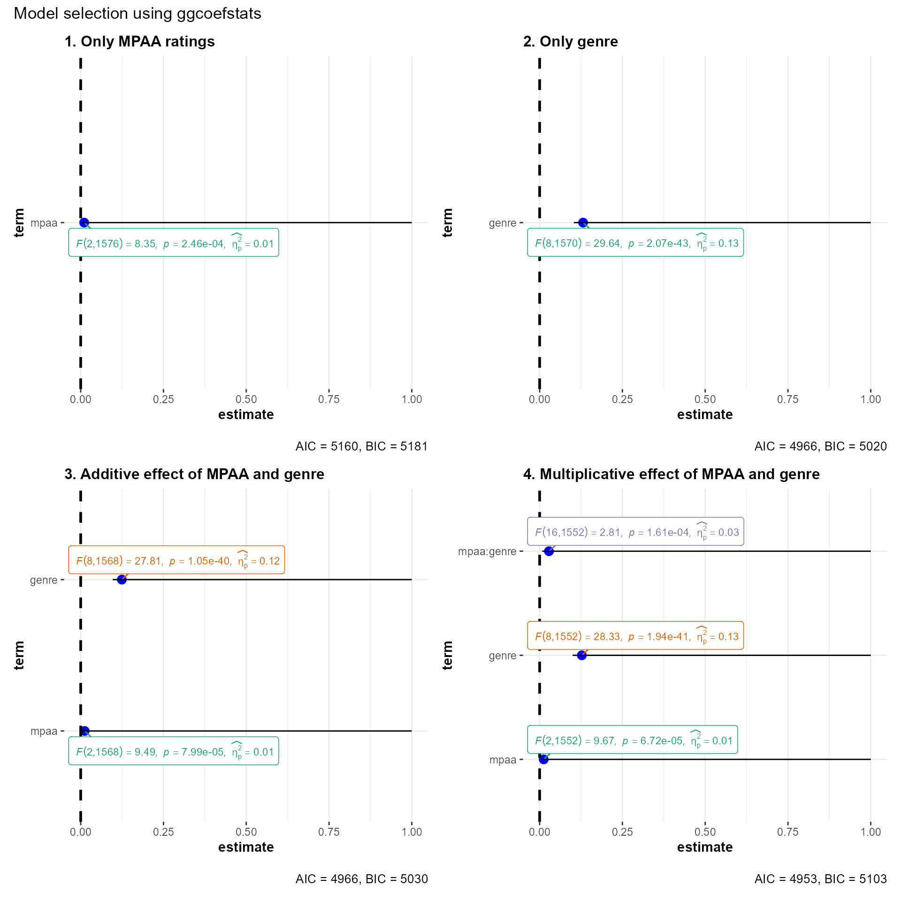
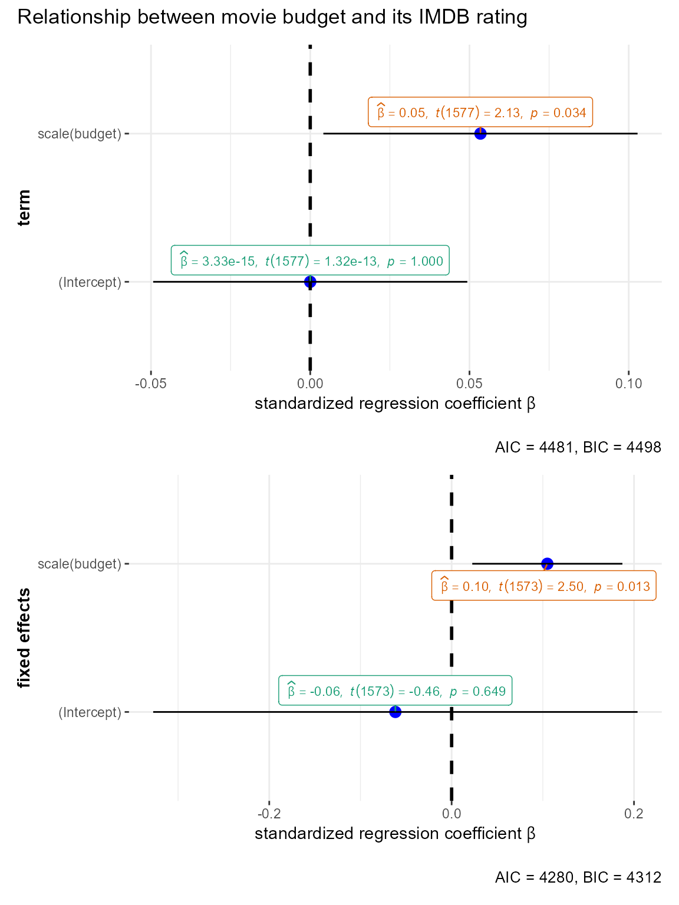
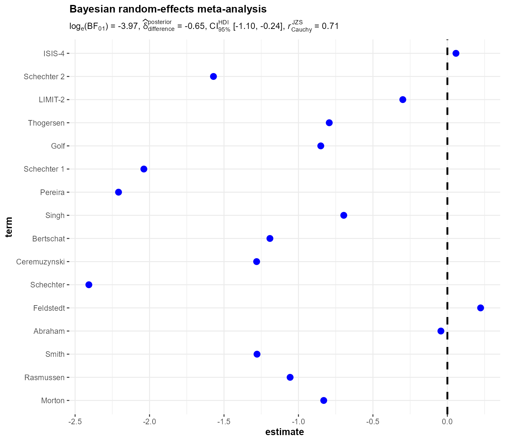

You can cite this package/vignette as:
Patil, I. (2018). Visualizations with statistical details: The
'ggstatsplot' approach. PsyArxiv. doi:10.31234/osf.io/p7mku
A BibTeX entry for LaTeX users is
@Article{,
title = {Visualizations with statistical details: The 'ggstatsplot' approach},
author = {Indrajeet Patil},
year = {2021},
journal = {PsyArxiv},
url = {https://psyarxiv.com/p7mku/},
doi = {10.31234/osf.io/p7mku},
}Lifecycle: 
The function ggcoefstats generates dot-and-whisker plots for regression models saved in a tidy data frame. The tidy dataframes are prepared using parameters::model_parameters. Additionally, if available, the model summary indices are also extracted from performance::model_performance.
In this vignette, we will see examples of how to use this function. We will try to cover as many classes of objects as possible. Unfortunately, there is no single dataset that will be helpful for carrying out all types of regression analyses and, therefore, we will use various datasets to explore data-specific hypotheses using regression models.
General structure of the plots
Although the statistical models displayed in the plot may differ based on the class of models being investigated, there are few aspects of the plot that will be invariant across models:
The dot-whisker plot contains a dot representing the estimate and their confidence intervals (
95%is the default). The estimate can either be effect sizes (for tests that depend on theF-statistic) or regression coefficients (for tests witht-, \(\chi^{2}\)-, andz-statistic), etc. The function will, by default, display a helpfulx-axis label that should clear up what estimates are being displayed. The confidence intervals can sometimes be asymmetric if bootstrapping was used.The label attached to dot will provide more details from the statistical test carried out and it will typically contain estimate, statistic, and p-value.
The caption will contain diagnostic information, if available, about models that can be useful for model selection: The smaller the Akaike’s Information Criterion (AIC) and the Bayesian Information Criterion (BIC) values, the “better” the model is.
The output of this function will be a
ggplot2object and, thus, it can be further modified (e.g., change themes, etc.) withggplot2functions.
Supported models
Most of the regression models that are supported in the underlying packages are also supported by ggcoefstats. For example-
aareg, afex_aov, anova, anova.mlm, anova, aov, aovlist, Arima, bam, bayesx, bayesGARCH, bayesQR, BBmm, BBreg, bcplm, betamfx, betaor, BFBayesFactor, BGGM, bglmerMod, bife, bigglm, biglm, blavaan, bmlm, blmerMod, blrm, bracl, brglm, brglm2, brmsfit, brmultinom, btergm, cch, censReg, cgam, cgamm, cglm, clm, clm2, clmm, clmm2, coeftest, complmrob, confusionMatrix, coxme, coxph, coxr, coxph.penal, cpglm, cpglmm, crch, crq, crr, DirichReg, drc, eglm, elm, emmGrid, epi.2by2, ergm, feis, felm, fitdistr, fixest, flexsurvreg, gam, Gam, gamlss, garch, geeglm, gjrm, glmc, glmerMod, glmmTMB, gls, glht, glm, glmm, glmmadmb, glmmPQL, glmRob, glmrob, glmx, gmm, HLfit, hurdle, ivFixed, ivprobit, ivreg, iv_robust, lavaan, lm, lm.beta, lmerMod, lmerModLmerTest, lmodel2, lmRob, lmrob, lm_robust, logitmfx, logitor, logitsf, LORgee, lqm, lqmm, lrm, manova, maov, margins, mcmc, mcmc.list, MCMCglmm, mclogit, mice, mmclogit, mediate, metafor, merMod, merModList, metaplus, mhurdle, mixor, mjoint, mle2, mlm, multinom, mvord, negbin, negbinmfx, negbinirr, nlmerMod, nlrq, nlreg, nls, orcutt, orm, plm, poissonmfx, poissonirr, polr, probitmfx, ridgelm, riskRegression, rjags, rlm, rlmerMod, robmixglm, rq, rqs, rqss, rrvglm, scam, selection, semLm, semLme, slm, speedglm, speedlm, stanfit, stanreg, summary.lm, survreg, svyglm, svy_vglm, svyolr, tobit, truncreg, varest, vgam, vglm, wbgee, wblm, zeroinfl, etc.
Summary of graphics
| graphical element |
geom_ used |
argument for further modification |
|---|---|---|
| regression estimate | ggplot2::geom_point |
point.args |
| error bars | ggplot2::geom_errorbarh |
errorbar.args |
| vertical line | ggplot2::geom_vline |
vline.args |
| label with statistical details | ggrepel::geom_label_repel |
stats.label.args |
Summary of meta-analysis tests
Hypothesis testing and Effect size estimation
| Type | Test | Effect size | CI? | Function used |
|---|---|---|---|---|
| Parametric | Meta-analysis via random-effects models | \(\beta\) | ✅ | metafor::metafor |
| Robust | Meta-analysis via robust random-effects models | \(\beta\) | ✅ | metaplus::metaplus |
| Bayes | Meta-analysis via Bayesian random-effects models | \(\beta\) | ✅ | metaBMA::meta_random |
Examples of supported models
First let’s load the needed library.
The following demos are in no particular order.
summary grid from emmeans package (emmGrid)
# setup
set.seed(123)
library(emmeans)
# linear model for sales of oranges per day
oranges_lm1 <-
stats::lm(
formula = sales1 ~ price1 + price2 + day + store,
data = oranges
)
# reference grid; see vignette("basics", package = "emmeans")
oranges_rg1 <- emmeans::ref_grid(oranges_lm1)
marginal <- emmeans::emmeans(oranges_rg1, "day")
# plot
ggcoefstats(
x = marginal,
point.args = list(color = "darkgreen", shape = 9),
title = "summary grid from `emmeans` package"
)
Another example with output containing effect sizes
# setup
set.seed(123)
library(emmeans)
# model and effect sizes
fiber.lm <- lm(strength ~ diameter + machine, data = fiber)
emm <- emmeans::emmeans(fiber.lm, "machine")
es <- emmeans::eff_size(emm, sigma = sigma(fiber.lm), edf = df.residual(fiber.lm))
# plot
ggcoefstats(
x = es,
title = "summary grid with effect sizes\nfrom `emmeans` package"
)
Bayes Factor (BFBayesFactor)
# setup
set.seed(123)
library(BayesFactor)
library(ggstatsplot)
# one sample t-test
mod1 <- ttestBF(mtcars$wt, mu = 3)
# independent t-test
mod2 <- ttestBF(formula = wt ~ am, data = mtcars)
# paired t-test
mod3 <- ttestBF(x = sleep$extra[1:10], y = sleep$extra[11:20], paired = TRUE)
# correlation
mod4 <- correlationBF(y = iris$Sepal.Length, x = iris$Sepal.Width)
# contingency tabs (not supported)
data("raceDolls")
mod5 <-
contingencyTableBF(
raceDolls,
sampleType = "indepMulti",
fixedMargin = "cols"
)
# anova
data("puzzles")
mod6 <-
anovaBF(
formula = RT ~ shape * color + ID,
data = puzzles,
whichRandom = "ID",
whichModels = "top",
progress = FALSE
)
# regression-1
mod7 <- regressionBF(rating ~ ., data = attitude, progress = FALSE)
# meta-analysis
t <- c(-.15, 2.39, 2.42, 2.43, -.15, 2.39, 2.42, 2.43)
N <- c(100, 150, 97, 99, 99, 97, 100, 150)
mod8 <- meta.ttestBF(t, N, rscale = 1, nullInterval = c(0, Inf))
# proportion test
mod9 <- proportionBF(y = 15, N = 25, p = .5)
# list of plots
combine_plots(
plotlist = list(
ggcoefstats(mod1, title = "one sample t-test"),
ggcoefstats(mod2, title = "independent t-test"),
ggcoefstats(mod3, title = "paired t-test"),
ggcoefstats(mod4, title = "correlation"),
ggcoefstats(mod5, title = "contingency table"),
ggcoefstats(mod6, title = "anova"),
ggcoefstats(mod7, title = "regression-1"),
ggcoefstats(mod8, title = "meta-analysis"),
ggcoefstats(mod9, title = "proportion test")
),
annotation.args = list(title = "Example from `BayesFactor` package")
)
Fixed Effects Individual Slope Estimator (feis)
# setup
set.seed(123)
library(feisr)
data("mwp", package = "feisr")
# model
feis.mod <-
feisr::feis(
formula = lnw ~ marry + enrol + as.factor(yeargr) | exp + I(exp^2),
data = mwp,
id = "id",
robust = TRUE
)
# plot
ggcoefstats(
x = feis.mod,
title = "Fixed Effects Individual Slope Estimator"
)
omnibus ANOVA (aov)
# setup
set.seed(123)
library(ggstatsplot)
library(ggplot2)
# model
mod_aov <- stats::aov(formula = rating ~ mpaa * genre, data = movies_long)
# plot
ggcoefstats(
x = mod_aov,
effsize = "omega", # changing the effect size estimate being displayed
point.args = list(color = "red", size = 4, shape = 15), # changing the point geom
package = "dutchmasters", # package from which color palette is to be taken
palette = "milkmaid", # color palette for labels
title = "omnibus ANOVA", # title for the plot
exclude.intercept = TRUE
) +
# further modification with the ggplot2 commands
# note the order in which the labels are entered
ggplot2::scale_y_discrete(labels = c("MPAA", "Genre", "Interaction term")) +
ggplot2::labs(x = "effect size estimate (eta-squared)", y = NULL)
Note that we can also use this function for model selection. You can try out different models with the code below and see how the AIC and BIC values change.
# setup
set.seed(123)
library(ggstatsplot)
# plot
combine_plots(
plotlist = list(
# model 1
ggcoefstats(
x = stats::aov(formula = rating ~ mpaa, data = movies_long),
title = "1. Only MPAA ratings"
),
# model 2
ggcoefstats(
x = stats::aov(formula = rating ~ genre, data = movies_long),
title = "2. Only genre"
),
# model 3
ggcoefstats(
x = stats::aov(formula = rating ~ mpaa + genre, data = movies_long),
title = "3. Additive effect of MPAA and genre"
),
# model 4
ggcoefstats(
x = stats::aov(formula = rating ~ mpaa * genre, data = movies_long),
title = "4. Multiplicative effect of MPAA and genre"
)
),
annotation.args = list(title = "Model selection using ggcoefstats")
)
conditional logit models (mclogit)
# setup
set.seed(123)
library(mclogit)
data(Transport)
# model
mod_mclogit <-
mclogit::mclogit(
formula = cbind(resp, suburb) ~ distance + cost,
data = Transport,
control = mclogit::mclogit.control(trace = FALSE)
)
# plot
ggcoefstats(
x = mod_mclogit,
title = "conditional logit models"
)
mixed conditional logit models (mmclogit)
# setup
set.seed(123)
library(mclogit)
data(electors)
# model
mod_mclogit <-
mclogit::mclogit(
formula = cbind(Freq, interaction(time, class)) ~
econ.left / class + welfare / class + auth / class,
random = ~ 1 | party.time,
data = within(electors, party.time <- interaction(party, time))
)
#> Iteration 1 - deviance = 1054.511 - criterion = 0.1598497
#> Iteration 2 - deviance = 923.1626 - criterion = 0.02666473
#> Iteration 3 - deviance = 890.3113 - criterion = 0.006530011
#> Iteration 4 - deviance = 883.0567 - criterion = 0.0005723444
#> Iteration 5 - deviance = 881.4344 - criterion = 1.387329e-05
#> Iteration 6 - deviance = 881.2041 - criterion = 1.394381e-07
#> Iteration 7 - deviance = 881.1809 - criterion = 1.04388e-09
#> converged
# plot
ggcoefstats(
x = mod_mclogit,
title = "Mixed Conditional Logit Models"
)
#> Warning: Number of labels is greater than default palette color count.
#> Try using another color `palette` (and/or `package`).
anova with car package (Anova)
# setup
set.seed(123)
library(car)
library(ggstatsplot)
# model
mod_Anova <-
car::Anova(stats::lm(
formula = conformity ~ fcategory * partner.status,
data = Moore,
contrasts = list(fcategory = contr.sum, partner.status = contr.sum)
))
# plot
ggcoefstats(
x = mod_Anova,
title = "Anova with `car`"
)
ANOVA with car package on multiple linear models (Anova.mlm)
# setup
set.seed(123)
library(car)
# data
dv <- c(1, 3, 4, 2, 2, 3, 2, 5, 6, 3, 4, 4, 3, 5, 6)
subject <- factor(c(
"s1", "s1", "s1", "s2", "s2", "s2", "s3", "s3", "s3",
"s4", "s4", "s4", "s5", "s5", "s5"
))
myfactor <- factor(c(
"f1", "f2", "f3", "f1", "f2", "f3", "f1", "f2", "f3",
"f1", "f2", "f3", "f1", "f2", "f3"
))
mydata <- data.frame(dv, subject, myfactor)
dvm <- with(mydata, cbind(
dv[myfactor == "f1"],
dv[myfactor == "f2"], dv[myfactor == "f3"]
))
# model
mlm1 <- lm(dvm ~ 1)
rfactor <- factor(c("f1", "f2", "f3"))
# model
mlm1.aov <-
car::Anova(mlm1,
idata = data.frame(rfactor),
idesign = ~rfactor,
type = "III"
)
# plot
ggcoefstats(
x = mlm1.aov,
title = "ANOVA with `car` on multiple linear models"
)
Anova with ez package
set.seed(123)
library(ez)
data(ANT)
# run an ANOVA on the mean correct RT data.
rt_anova <-
suppressWarnings(ez::ezANOVA(
data = ANT[ANT$error == 0, ],
dv = rt,
wid = subnum,
within = cue,
detailed = TRUE,
return_aov = TRUE
))
# plot
ggcoefstats(
x = rt_anova$aov,
title = "Anova with `ez` package"
)
linear model (lm)
# setup
set.seed(123)
# data
df <- dplyr::filter(
.data = movies_long,
genre %in% c(
"Action",
"Action Comedy",
"Action Drama",
"Comedy",
"Drama",
"Comedy Drama"
)
)
# plot
ggcoefstats(
x = stats::lm(formula = rating ~ genre, data = df),
sort = "ascending", # sorting the terms of the model based on estimate values
ggtheme = ggplot2::theme_gray(), # changing the default theme
stats.label.color = c("#CC79A7", "darkgreen", "#0072B2", "darkred", "black", "red"),
title = "Movie ratings by their genre",
subtitle = "Source: www.imdb.com"
)
The same output will also be returned for objects of type summary.lm.
standardized regression coefficients with lm (lm.beta)
# setup
set.seed(123)
library(MASS)
library(lm.beta)
# model
mod.lm <- stats::lm(formula = mpg ~ wt, data = mtcars)
mod.robust <- MASS::rlm(formula = mpg ~ wt, data = mtcars)
mod.beta <- lm.beta::lm.beta(mod.lm)
mod.robust.beta <- lm.beta::lm.beta(mod.robust)
# plot
combine_plots(
plotlist = list(
ggcoefstats(mod.beta),
ggcoefstats(mod.robust.beta, stats.labels = FALSE)
),
annotation.args = list(title = "standardized regression coefficients with `lm`")
)
bounded memory linear regression (biglm)
# setup
set.seed(123)
library(biglm)
# model
bfit1 <-
biglm(
formula = scale(mpg) ~ scale(wt) + scale(disp),
data = mtcars
)
# plot
ggcoefstats(
x = bfit1,
title = "bounded memory simple linear regression"
)
bounded memory general linear regression (bigglm)
# setup
set.seed(123)
library(biglm)
data(trees)
# model
mod_bigglm <-
biglm::bigglm(
formula = log(Volume) ~ log(Girth) + log(Height),
data = trees,
chunksize = 10,
sandwich = TRUE
)
# plot
ggcoefstats(
x = mod_bigglm,
title = "bounded memory general linear regression"
)
efficient (general) linear model (elm/eglm)
# setup
set.seed(123)
library(eflm)
# models
mod_elm <- eflm::elm(mpg ~ wt, data = mtcars)
mod_eglm <- eflm::eglm(mpg ~ wt, family = gaussian(), data = mtcars)
# plot
combine_plots(
plotlist = list(
ggcoefstats(
x = mod_elm,
title = "efficient linear model"
),
ggcoefstats(
x = mod_eglm,
title = "efficient general linear model"
)
),
plotgrid.args = list(nrow = 1),
annotation.args = list(title = "efficient (general) linear model using `eflm`")
)
linear mixed-effects model (lmer/lmerMod)
# set up
library(lme4)
library(ggstatsplot)
set.seed(123)
# lm model
mod1 <- stats::lm(formula = scale(rating) ~ scale(budget), data = movies_long)
# merMod model
mod2 <-
lme4::lmer(
formula = scale(rating) ~ scale(budget) + (budget | genre),
data = movies_long,
control = lme4::lmerControl(calc.derivs = FALSE)
)
# combining the two different plots
combine_plots(
plotlist = list(
# model 1: simple linear model
ggcoefstats(
x = mod1,
title = "linear model",
stats.label.color = "black",
exclude.intercept = TRUE # hide the intercept
) +
ggplot2::labs(x = parse(text = "'standardized regression coefficient' ~italic(beta)")),
# model 2: linear mixed-effects model
ggcoefstats(
x = mod2,
title = "linear mixed-effects model",
stats.label.color = "black",
exclude.intercept = TRUE # hide the intercept
) +
ggplot2::labs(
x = parse(text = "'standardized regression coefficient' ~italic(beta)"),
y = "fixed effects"
)
),
plotgrid.args = list(nrow = 2),
annotation.args = list(title = "Relationship between movie budget and its IMDB rating")
)
Note that for mixed-effects models, only the fixed effects are shown because there are no confidence intervals for random effects terms. In case, you would like to see these terms, you can enter the same object you entered as x argument to parameters::model_parameters:
# setup
set.seed(123)
library(lme4)
library(parameters)
# tidy output
parameters::model_parameters(
lme4::lmer(
formula = scale(rating) ~ scale(budget) + (budget | genre),
data = movies_long,
control = lme4::lmerControl(calc.derivs = FALSE)
)
)
#> # Fixed Effects
#>
#> Parameter | Coefficient | SE | 95% CI | t(1573) | p
#> ------------------------------------------------------------------
#> (Intercept) | -0.06 | 0.14 | [-0.33, 0.20] | -0.46 | 0.649
#> budget | 0.10 | 0.04 | [ 0.02, 0.19] | 2.50 | 0.012
#>
#> # Random Effects
#>
#> Parameter | Coefficient
#> -----------------------------------
#> SD (Intercept: genre) | 0.43
#> SD (budget: genre) | 3.03e-03
#> Cor (Intercept~genre) | -0.49
#> SD (Residual) | 0.96
nonlinear model using generalized least squares (gnls)
set.seed(123)
library(nlme)
# variance increases with a power of the absolute fitted values
mod_gnls <- gnls(
model = weight ~ SSlogis(Time, Asym, xmid, scal),
data = Soybean,
weights = varPower()
)
ggcoefstats(
x = mod_gnls,
title = "nonlinear model using generalized least squares"
)
analysis of factorial experiments (mixed)
# setup
set.seed(123)
library(afex)
library(MEMSS)
data("Machines", package = "MEMSS")
# simple model with random-slopes for repeated-measures factor
m1_afex <-
afex::mixed(
formula = score ~ Machine + (Machine | Worker),
data = Machines
)
#> Fitting one lmer() model. [DONE]
#> Calculating p-values. [DONE]
# suppress correlations among random effect parameters with || and expand_re = TRUE
m2_afex <-
afex::mixed(
formula = score ~ Machine + (Machine || Worker),
data = Machines,
expand_re = TRUE
)
#> Fitting one lmer() model. [DONE]
#> Calculating p-values. [DONE]
# plot
combine_plots(
plotlist = list(
ggcoefstats(m1_afex, title = "example-1"),
ggcoefstats(m2_afex, title = "example-2")
),
annotation.args = list(title = "analysis of factorial experiments (using `afex`)")
)
anova using afex (afex_aov)
# setup
set.seed(123)
library(afex)
data(obk.long)
# model
fit_all <-
afex::aov_ez(
"id",
"value",
obk.long,
between = c("treatment"),
within = c("phase")
)
# plot
ggcoefstats(
x = fit_all,
title = "anova using `afex`"
)
joint model for survival and longitudinal data measured with error (joint)
# setup
set.seed(123)
library(joineR)
# data
data(heart.valve)
heart.surv <- UniqueVariables(heart.valve,
var.col = c("fuyrs", "status"),
id.col = "num"
)
heart.long <- heart.valve[, c("num", "time", "log.lvmi")]
heart.cov <- UniqueVariables(heart.valve,
c("age", "hs", "sex"),
id.col = "num"
)
heart.valve.jd <- jointdata(
longitudinal = heart.long,
baseline = heart.cov,
survival = heart.surv,
id.col = "num",
time.col = "time"
)
# model
mod_joint <- joint(
data = heart.valve.jd,
long.formula = log.lvmi ~ 1 + time + hs,
surv.formula = Surv(fuyrs, status) ~ hs,
model = "intslope"
)
# plot
ggcoefstats(
x = mod_joint,
title = "joint model for survival and longitudinal data measured with error"
)
risk regression (riskRegression)
# setup
set.seed(123)
library(riskRegression)
library(prodlim)
data(Melanoma, package = "riskRegression")
# tumor thickness on the log-scale
Melanoma$logthick <- log(Melanoma$thick)
# absolute risk model
multi.arr <-
riskRegression::ARR(
formula = Hist(time, status) ~ logthick + sex + age + ulcer,
data = Melanoma,
cause = 1
)
# plot
ggcoefstats(
x = multi.arr,
title = "risk regression"
)
Aalen’s additive regression model for censored data (aareg)
# setup
library(survival)
set.seed(123)
# model
afit <-
survival::aareg(
formula = Surv(time, status) ~ age + sex + ph.ecog,
data = lung,
dfbeta = TRUE
)
# plot
ggcoefstats(
x = afit,
title = "Aalen's additive regression model",
subtitle = "(for censored data)",
k = 3
)
multivariate generalized linear mixed models (MCMCglmm)
# setup
set.seed(123)
library(lme4)
library(MCMCglmm)
data(sleepstudy)
# model
mm0 <-
MCMCglmm::MCMCglmm(
fixed = scale(Reaction) ~ scale(Days),
random = ~Subject,
data = lme4::sleepstudy,
nitt = 4000,
pr = TRUE,
verbose = FALSE
)
# plot
ggcoefstats(
x = mm0,
title = "multivariate generalized linear mixed model",
conf.method = "HPDinterval",
robust = TRUE # additional arguments passed to `parameters::model_parameters`
)
STAR Models with BayesX (bayesx)
# setup
set.seed(111)
library(R2BayesX)
## generate some data
n <- 200
## regressor
dat <- data.frame(x = runif(n, -3, 3))
## response
dat$y <- with(dat, 1.5 + sin(x) + rnorm(n, sd = 0.6))
## estimate models with bayesx REML and MCMC
b1 <- R2BayesX::bayesx(y ~ sx(x), method = "REML", data = dat)
# plot
ggcoefstats(
x = b1,
title = "STAR Models with BayesX"
)
Generalised Joint Regression Models with Binary/Continuous/Discrete/Survival Margins (gjrm)
library(GJRM)
# data
set.seed(123)
dat <- data.frame(
x1 = rnorm(40, 1:10),
x2 = rnorm(40, 1:30),
bid1 = sample(1:5, 40, replace = TRUE),
bid2 = sample(1:5, 40, replace = TRUE),
y1 = sample(0:1, 40, replace = TRUE),
y2 = sample(0:1, 40, replace = TRUE)
)
f.list <- list(
y1 ~ bid1 + x1 + x2,
y2 ~ bid2 + x1 + x2
)
# model
mod_gjrm <- gjrm(f.list, dat, Model = "B", margins = c("probit", "probit"))
# plot
ggcoefstats(
x = mod_gjrm,
title = "Generalised Joint Regression Models\n with Binary/Continuous/Discrete/Survival Margins"
)
Heckman-style selection and treatment effect models (selection)
library(sampleSelection)
library(wooldridge) # for data
data(mroz)
# model
mod_selection <- selection(
inlf ~ educ + kidslt6 + kidsge6,
wage ~ educ + exper + expersq,
method = "2step",
data = mroz)
# plot
ggcoefstats(
x = mod_selection,
title = "Heckman-style selection and treatment effect models"
)
#> Warning: Number of labels is greater than default palette color count.
#> Try using another color `palette` (and/or `package`).
inference in spatial GLMMs (HLfit)
# setup
set.seed(123)
library(spaMM)
data("wafers")
data("scotlip")
# model
mod_HLfit <-
fitme(
formula = y ~ 1 + (1 | batch),
family = Gamma(log),
data = wafers
)
# plot
ggcoefstats(
x = mod_HLfit,
title = "Inference in spatial GLMMs"
)
#> Error: Sorry, `model_parameters()` does currently not work for objects of class 'HLfit'.
robust linear mixed-effects models (rlmer)
# setups
set.seed(123)
library(robustlmm)
# model
roblmm.mod <-
robustlmm::rlmer(
formula = scale(Reaction) ~ scale(Days) + (Days | Subject),
data = sleepstudy,
rho.sigma.e = psi2propII(smoothPsi, k = 2.28),
rho.sigma.b = chgDefaults(smoothPsi, k = 5.11, s = 10)
)
# plot
ggcoefstats(
x = roblmm.mod,
title = "robust estimation of linear mixed-effects model",
conf.level = 0.90
)
linear mixed-effects models with lmerTest (lmerModLmerTest)
# setup
set.seed(123)
library(lmerTest)
# fit linear mixed model to the ham data:
fm <-
lmerTest::lmer(
formula = Informed.liking ~ Gender + Information * Product + (1 | Consumer) +
(1 | Consumer:Product),
data = ham
)
# plot
ggcoefstats(
x = fm,
title = "linear mixed-effects models with `lmerTest`"
)
#> Warning: Number of labels is greater than default palette color count.
#> Try using another color `palette` (and/or `package`).
non-linear mixed-effects model (nlmer/nlmerMod)
# data
library(lme4)
set.seed(123)
startvec <- c(Asym = 200, xmid = 725, scal = 350)
# model
nm1 <-
lme4::nlmer(
formula = circumference ~ SSlogis(age, Asym, xmid, scal) ~ Asym | Tree,
data = Orange,
start = startvec
)
# plot
ggcoefstats(
x = nm1,
title = "non-linear mixed-effects model"
)
non-linear least-squares model (nls)
# setup
set.seed(123)
library(ggstatsplot)
# model
mod_nls <-
stats::nls(
formula = rating ~ k / budget + c,
data = movies_long,
start = list(k = 1, c = 0)
)
# plot
ggcoefstats(
x = mod_nls,
title = "non-linear least squares regression",
subtitle = "Non-linear relationship between budget and rating"
)
conditional generalized linear models for clustered data (cglm)
# setup
set.seed(123)
library(cglm)
data(teenpov)
# model
fit.ide <-
cglm::cglm(
method = "ts",
formula = hours ~ nonpov + inschool + spouse + age + mother,
data = teenpov,
id = "ID",
link = "identity"
)
# plot
ggcoefstats(
x = fit.ide,
title = "conditional generalized linear models for clustered data"
)
joint model to time-to-event data and multivariate longitudinal data (mjoint)
# setup
set.seed(123)
library(joineRML)
data(heart.valve)
# data
hvd <- heart.valve[!is.na(heart.valve$log.grad) &
!is.na(heart.valve$log.lvmi) &
heart.valve$num <= 50, ]
# model
fit_mjoint <-
joineRML::mjoint(
formLongFixed = list(
"grad" = log.grad ~ time + sex + hs,
"lvmi" = log.lvmi ~ time + sex
),
formLongRandom = list(
"grad" = ~ 1 | num,
"lvmi" = ~ time | num
),
formSurv = Surv(fuyrs, status) ~ age,
data = hvd,
inits = list("gamma" = c(0.11, 1.51, 0.80)),
timeVar = "time"
)
# extract the survival fixed effects and plot them
ggcoefstats(
x = fit_mjoint,
conf.level = 0.99,
component = "longitudinal",
package = "yarrr",
palette = "basel",
title = "joint model to time-to-event data and multivariate longitudinal data"
)
#> Error in match.arg(component): 'arg' should be one of "all", "conditional", "survival"
stationary linear model (slm)
# setup
set.seed(123)
library(slm)
data("shan")
# model
mod_slm <-
slm::slm(
myformula = shan$PM_Xuhui ~ .,
data = shan,
method_cov_st = "fitAR",
model_selec = -1
)
# plot
ggcoefstats(
x = mod_slm,
conf.level = 0.90,
title = "stationary linear models",
package = "rcartocolor",
palette = "Vivid"
)
generalized linear model (glm)
# setup
library(ggstatsplot)
set.seed(123)
# having a look at the Titanic dataset
df <- as.data.frame(Titanic)
# model
mod_glm <-
stats::glm(
formula = Survived ~ Sex + Age,
data = df,
weights = df$Freq,
family = stats::binomial(link = "logit")
)
# plot
ggcoefstats(
x = mod_glm,
ggtheme = ggthemes::theme_economist_white(),
ggstatsplot.layer = FALSE,
title = "generalized linear model (glm)",
vline.args = list(color = "red", linetype = "solid")
)
#> Error: geom_vline requires the following missing aesthetics: xintercept
Note: The exact statistic will depend on the family used for glm models: Some families will have a t statistic associated with them, while others a z statistic. The function will figure this out for you.
# creating dataframes to use for regression analyses
set.seed(123)
library(ggstatsplot)
# dataframe #1
df.counts <-
data.frame(
treatment = gl(n = 3, k = 3, length = 9),
outcome = gl(n = 3, k = 1, length = 9),
counts = c(18, 17, 15, 20, 10, 20, 25, 13, 12)
) %>%
tibble::as_tibble(.)
# dataframe #2
df.clotting <-
data.frame(
u = c(5, 10, 15, 20, 30, 40, 60, 80, 100),
lot1 = c(118, 58, 42, 35, 27, 25, 21, 19, 18),
lot2 = c(69, 35, 26, 21, 18, 16, 13, 12, 12)
) %>%
tibble::as_tibble(.)
# dataframe #3
x1 <- stats::rnorm(50)
y1 <- stats::rpois(n = 50, lambda = exp(1 + x1))
df.3 <- data.frame(x = x1, y = y1) %>%
tibble::as_tibble(.)
# dataframe #4
x2 <- stats::rnorm(50)
y2 <- rbinom(
n = 50,
size = 1,
prob = stats::plogis(x2)
)
df.4 <- data.frame(x = x2, y = y2) %>%
tibble::as_tibble(.)
# combining all plots in a single plot
combine_plots(
plotlist = list(
# Family: Poisson
ggcoefstats(
x = stats::glm(
formula = counts ~ outcome + treatment,
data = df.counts,
family = stats::poisson(link = "log")
),
title = "Family: Poisson",
stats.label.color = "black"
),
# Family: Gamma
ggcoefstats(
x = stats::glm(
formula = lot1 ~ log(u),
data = df.clotting,
family = stats::Gamma(link = "inverse")
),
title = "Family: Gamma",
stats.label.color = "black"
),
# Family: Quasi
ggcoefstats(
x = stats::glm(
formula = y ~ x,
family = quasi(variance = "mu", link = "log"),
data = df.3
),
title = "Family: Quasi",
stats.label.color = "black"
),
# Family: Quasibinomial
ggcoefstats(
x = stats::glm(
formula = y ~ x,
family = stats::quasibinomial(link = "logit"),
data = df.4
),
title = "Family: Quasibinomial",
stats.label.color = "black"
),
# Family: Quasipoisson
ggcoefstats(
x = stats::glm(
formula = y ~ x,
family = stats::quasipoisson(link = "log"),
data = df.4
),
title = "Family: Quasipoisson",
stats.label.color = "black"
),
# Family: Gaussian
ggcoefstats(
x = stats::glm(
formula = Sepal.Length ~ Species,
family = stats::gaussian(link = "identity"),
data = iris
),
title = "Family: Gaussian",
stats.label.color = "black"
)
),
plotgrid.args = list(ncol = 2),
annotation.args = list(title = "Exploring models with different `glm` families")
)
The version of glm implemented in rms is also supported.
# setup
set.seed(123)
library(ggstatsplot)
library(rms)
# Dobson (1990) Page 93: Randomized Controlled Trial :
counts <- c(18, 17, 15, 20, 10, 20, 25, 13, 12)
outcome <- gl(3, 1, 9)
treatment <- gl(3, 3)
f_Glm <- rms::Glm(counts ~ outcome + treatment, family = poisson())
# plot
ggcoefstats(
x = f_Glm,
title = "rms' implementation of glm"
)
modified fitting for generalized linear models (glm2)
# setup
set.seed(123)
library(glm2)
y <- c(1, 1, 1, 0)
# model
fit_glm2 <-
glm2::glm2(
formula = y ~ 1,
family = binomial(link = "logit"),
control = glm.control(trace = FALSE)
)
# plot
ggcoefstats(
x = fit_glm2,
title = "greater stability for fitting generalized linear models"
)
Fit Generalized Estimating Equations with geepack (geeglm)
# setup
set.seed(123)
library(geepack)
data(dietox)
dietox$Cu <- as.factor(dietox$Cu)
mf <- formula(Weight ~ Cu * (Time + I(Time^2) + I(Time^3)))
# model
gee1 <-
geeglm(
mf,
data = dietox,
id = Pig,
family = poisson("identity"),
corstr = "ar1"
)
# plot
ggcoefstats(
x = gee1,
title = "Fit Generalized Estimating Equations",
package = "ggsci",
palette = "category20c_d3"
)
#> Error in parse(text = text[[i]]): <text>:1:69: unexpected string constant
#> 1: list(~widehat(italic(beta))=='21.86', ~italic(chi)^2~('849')==994.42', ~italic(p)=='
#> ^
ordinal regression model (orm)
# setup
library(rms)
set.seed(123)
# data
n <- 100
y <- round(runif(n), 2)
x1 <- sample(c(-1, 0, 1), n, TRUE)
x2 <- sample(c(-1, 0, 1), n, TRUE)
# model
g <- rms::orm(y ~ x1 + x2, eps = 1e-5)
# plot
ggcoefstats(
x = g,
title = "Ordinal Regression Model"
)
logistic regression model (lrm)
# setup
library(rms)
set.seed(123)
# data
n <- 500
x1 <- runif(n, -1, 1)
x2 <- runif(n, -1, 1)
x3 <- sample(0:1, n, TRUE)
y <- x1 + 0.5 * x2 + x3 + rnorm(n)
y <- as.integer(cut2(y, g = 10))
dd <- datadist(x1, x2, x3)
options(datadist = "dd")
# model
f_lrm <- rms::lrm(y ~ x1 + pol(x2, 2) + x3, eps = 1e-7) # eps to check against rstan
# plot
ggcoefstats(
x = f_lrm,
title = "Logistic Regression Model",
package = "ggsci",
palette = "category20c_d3"
)
Two-Stage Least Squares Instrumental Variables Regression (iv_robust)
# setup
set.seed(123)
library(fabricatr)
library(estimatr)
# data
dat <-
fabricate(
N = 40,
Y = rpois(N, lambda = 4),
Z = rbinom(N, 1, prob = 0.4),
D = Z * rbinom(N, 1, prob = 0.8),
X = rnorm(N),
G = sample(letters[1:4], N, replace = TRUE)
)
# instrument for treatment `D` with encouragement `Z`
mod_ivrobust <- estimatr::iv_robust(formula = Y ~ D + X | Z + X, data = dat)
# plot
ggcoefstats(
x = mod_ivrobust,
title = "Two-Stage Least Squares Instrumental Variables Regression"
)
ordinary least squares with robust standard errors (lm_robust)
# for reproducibility
set.seed(123)
library(estimatr)
# model
mod_lmrobust <-
estimatr::lm_robust(
formula = mpg ~ gear + wt + cyl,
data = mtcars
)
# plot
ggcoefstats(
x = mod_lmrobust,
title = "ordinary least squares with robust standard errors"
)
fitting negative binomial GLM (negbin)
Just to demonstrate that this can be done, let’s also flip the axes:
# setup
library(MASS)
library(lme4)
set.seed(101)
# data
dd <-
expand.grid(
f1 = factor(1:3),
f2 = LETTERS[1:2],
g = 1:9,
rep = 1:15,
KEEP.OUT.ATTRS = FALSE
)
mu <- 5 * (-4 + with(dd, as.integer(f1) + 4 * as.numeric(f2)))
dd$y <- rnbinom(nrow(dd), mu = mu, size = 0.5)
# model
m.glm <- MASS::glm.nb(formula = y ~ f1 * f2, data = dd)
# plot
ggcoefstats(
x = m.glm,
title = "generalized linear model (GLM) for the negative binomial family",
only.significant = TRUE,
stats.label.args = list(size = 2.5, direction = "both")
) +
ggplot2::coord_flip()
generalized linear mixed-effects model (glmer/glmerMod)
# setup
set.seed(123)
library(lme4)
# model
mod_glmer <-
lme4::glmer(
formula = Survived ~ Sex + Age + (Sex + Age | Class),
data = Titanic_full,
family = stats::binomial(link = "logit"),
control = lme4::glmerControl(
optimizer = "Nelder_Mead",
calc.derivs = FALSE,
boundary.tol = 1e-7
)
)
# plot
ggcoefstats(
x = mod_glmer,
title = "generalized linear mixed-effects model"
)
#> Error in rbind(deparse.level, ...): numbers of columns of arguments do not match
Fitting Generalized Linear Mixed Models using MCML (glmm)
# setup
library(glmm)
data(BoothHobert)
set.seed(1234)
# model
mod.mcml1 <-
glmm::glmm(
fixed = y ~ 0 + x1,
random = list(y ~ 0 + z1),
varcomps.names = c("z1"),
data = BoothHobert,
family.glmm = bernoulli.glmm,
m = 100,
doPQL = TRUE
)
# plot
ggcoefstats(
x = mod.mcml1,
title = "Fitting Generalized Linear Mixed Models using MCML"
)
fitting negative binomial GLMM (glmer.nb)
# setup
library(MASS)
library(lme4)
set.seed(101)
# data
dd <-
expand.grid(
f1 = factor(1:3),
f2 = LETTERS[1:2],
g = 1:9,
rep = 1:15,
KEEP.OUT.ATTRS = FALSE
)
mu <- 5 * (-4 + with(dd, as.integer(f1) + 4 * as.numeric(f2)))
dd$y <- rnbinom(nrow(dd), mu = mu, size = 0.5)
# model
m.nb <- lme4::glmer.nb(formula = y ~ f1 * f2 + (1 | g), data = dd)
# plot
ggcoefstats(
x = m.nb,
title = "generalized linear mixed-effects model (GLMM) for the negative binomial family"
)
#> Random effect variances not available. Returned R2 does not account for random effects.
Zero-Inflated Count Data Regression (zeroinfl)
# setup
set.seed(123)
library(pscl)
# data
data("bioChemists", package = "pscl")
# model
mod_zeroinfl <-
pscl::zeroinfl(
formula = art ~ . | 1,
data = bioChemists,
dist = "negbin"
)
# plot
ggcoefstats(
x = mod_zeroinfl,
title = "Zero-Inflated Count Data Regression"
)
Vector Generalized Additive Models (vgam)
# setup
set.seed(123)
library(VGAM)
pneumo <- transform(pneumo, let = log(exposure.time))
# model
mod_vgam <-
VGAM::vgam(
cbind(normal, mild, severe) ~ s(let),
cumulative(parallel = TRUE),
data = pneumo,
trace = FALSE
)
# plot
ggcoefstats(
x = mod_vgam,
title = "Vector Generalized Additive Models"
)
#> Error in parse(text = text[[i]]): <text>:1:65: unexpected string constant
#> 1: list(~widehat(italic(beta))=='-2.44', ~italic(chi)^2~('3')==1.96', ~italic(p)=='
#> ^
Vector Generalized Linear Models (vglm)
# setup
set.seed(123)
library(VGAM)
pneumo <- transform(pneumo, let = log(exposure.time))
# model
mod_vglm <-
VGAM::vglm(
formula = cbind(normal, mild, severe) ~ let,
family = multinomial,
data = pneumo
)
# plot
ggcoefstats(
x = mod_vglm,
title = "Vector Generalized Linear Models"
)
Reduced-Rank Vector Generalized Linear Models (rrvglm)
# setup
set.seed(123)
library(VGAM)
# data
nn <- 1000 # Number of observations
delta1 <- 3.0 # Specify this
delta2 <- 1.5 # Specify this; should be greater than unity
a21 <- 2 - delta2
mydata <- data.frame(x2 = runif(nn), x3 = runif(nn))
mydata <- transform(mydata, mu = exp(2 + 3 * x2 + 0 * x3))
mydata <- transform(mydata,
y2 = rnbinom(nn, mu = mu, size = (1 / delta1) * mu^a21)
)
# model
rrnb2 <-
VGAM::rrvglm(
formula = y2 ~ x2 + x3,
family = negbinomial(zero = NULL),
data = mydata,
trace = FALSE
)
# plot
ggcoefstats(
x = rrnb2,
title = "Reduced-Rank Vector Generalized Linear Models"
)
Vector autoregression models (varest)
# setup
set.seed(123)
library(vars)
data(Canada)
# model
mod_varest <- vars::VAR(Canada, p = 2, type = "none")
# plot
ggcoefstats(
x = mod_varest,
title = "Vector autoregression models"
)
#> Warning: Number of labels is greater than default palette color count.
#> Try using another color `palette` (and/or `package`).
Constrained Generalized Additive Model Fitting (cgam)
# setup
set.seed(123)
library(cgam)
data(cubic)
# model
m_cgam <- cgam::cgam(formula = y ~ incr.conv(x), data = cubic)
# plot
ggcoefstats(
x = m_cgam,
title = "Constrained Generalized Additive Model Fitting"
)
Constrained Generalized Additive Mixed-Effects Model Fitting (cgamm)
# setup
set.seed(123)
library(cgam)
# simulate a balanced data set with 30 clusters
# each cluster has 30 data points
n <- 30
m <- 30
# the standard deviation of between cluster error terms is 1
# the standard deviation of within cluster error terms is 2
sige <- 1
siga <- 2
# generate a continuous predictor
x <- 1:(m * n)
for (i in 1:m) {
x[(n * (i - 1) + 1):(n * i)] <- round(runif(n), 3)
}
# generate a group factor
group <- trunc(0:((m * n) - 1) / n) + 1
# generate the fixed-effect term
mu <- 10 * exp(10 * x - 5) / (1 + exp(10 * x - 5))
# generate the random-intercept term asscosiated with each group
avals <- rnorm(m, 0, siga)
# generate the response
y <- 1:(m * n)
for (i in 1:m) {
y[group == i] <- mu[group == i] + avals[i] + rnorm(n, 0, sige)
}
# use REML method to fit the model
ans <- cgam::cgamm(formula = y ~ s.incr(x) + (1 | group), reml = TRUE)
# plot
ggcoefstats(
x = ans,
title = "Constrained Generalized Additive Mixed-Effects Model Fitting"
)
shape constrained additive models (scam)
# setup
set.seed(123)
library(scam)
# data
n <- 200
x1 <- runif(n) * 6 - 3
f1 <- 3 * exp(-x1^2) # unconstrained term
f1 <- (f1 - min(f1)) / (max(f1) - min(f1)) # function scaled to have range [0,1]
x2 <- runif(n) * 4 - 1
f2 <- exp(4 * x2) / (1 + exp(4 * x2)) # monotone increasing smooth
f2 <- (f2 - min(f2)) / (max(f2) - min(f2)) # function scaled to have range [0,1]
f <- f1 + f2
y <- f + rnorm(n) * 0.1
dat <- data.frame(x1 = x1, x2 = x2, y = y)
# model
b_scam <-
scam::scam(
y ~ s(x1, k = 15, bs = "cr", m = 2) + s(x2, k = 25, bs = "mpi", m = 2),
family = gaussian(link = "identity"),
data = dat,
not.exp = FALSE
)
# plot
ggcoefstats(
x = b_scam,
title = "Shape constrained additive models"
)
Hurdle Models for Count Data Regression (hurdle)
# setup
set.seed(123)
library(pscl)
data("bioChemists", package = "pscl")
# geometric-poisson
fm_hp2 <-
pscl::hurdle(
formula = art ~ .,
data = bioChemists,
zero = "geometric"
)
# plot
ggcoefstats(
x = fm_hp2,
only.significant = TRUE,
conf.level = 0.99,
title = "Hurdle Models for Count Data Regression"
)
#> Warning: Number of labels is greater than default palette color count.
#> Try using another color `palette` (and/or `package`).
beta-binomial mixed-effects model (BBmm)
# setup
if (isFALSE("PROreg" %in% installed.packages())) {
install.packages("https://cran.r-project.org/src/contrib/Archive/PROreg/PROreg_1.0.tar.gz",
repos = NULL,
type = "source"
)
}
library(PROreg)
set.seed(123)
# defining the parameters
k <- 100
m <- 10
phi <- 0.5
beta <- c(1.5, -1.1)
sigma <- 0.5
# simulating the covariate and random effects
x <- runif(k, 0, 10)
X <- model.matrix(~x)
z <- as.factor(rBI(k, 4, 0.5, 2))
Z <- model.matrix(~ z - 1)
u <- rnorm(5, 0, sigma)
# the linear predictor and simulated response variable
eta <- beta[1] + beta[2] * x + crossprod(t(Z), u)
p <- 1 / (1 + exp(-eta))
y <- rBB(k, m, p, phi)
dat <- data.frame(cbind(y, x, z))
dat$z <- as.factor(dat$z)
# apply the model
mod_BBmm <-
PROreg::BBmm(
fixed.formula = y ~ x,
random.formula = ~z,
m = m,
data = dat
)
#> Iteration number: 1
#> Iteration number: 2
#> Iteration number: 3
#> Iteration number: 4
#> Iteration number: 5
# plot
ggcoefstats(
x = mod_BBmm,
title = "beta-binomial mixed-effects model"
)
beta-binomial logistic regression model (BBreg)
# setup
set.seed(18)
library(PROreg)
# we simulate a covariate, fix the paramters of the beta-binomial
# distribution and simulate a response variable.
# then we apply the model, and try to get the same values.
k <- 1000
m <- 10
x <- rnorm(k, 5, 3)
beta <- c(-10, 2)
p <- 1 / (1 + exp(-1 * (beta[1] + beta[2] * x)))
phi <- 1.2
y <- PROreg::rBB(k, m, p, phi)
# model
mod_BBreg <- PROreg::BBreg(y ~ x, m)
# plot
ggcoefstats(
x = mod_BBreg,
title = "beta-binomial logistic regression model"
)
binary choice models with fixed effects (bife)
# setup
set.seed(123)
library(bife)
# binary choice models with fixed effects
mod_bife <-
bife::bife(
formula = LFP ~ I(AGE^2) + log(INCH) + KID1 + KID2 + KID3 + factor(TIME) | ID,
data = psid
)
# plot
ggcoefstats(
x = mod_bife,
title = "binary choice models with fixed effects"
)
#> Warning: Number of labels is greater than default palette color count.
#> Try using another color `palette` (and/or `package`).
Dirichlet regression model (DirichReg)
# setup
set.seed(123)
library(DirichletReg)
# data
ALake <- ArcticLake
ALake$Y <- DR_data(ALake[, 1:3])
# fit a quadratic Dirichlet regression models ("common")
mod_DirichReg <- DirichletReg::DirichReg(Y ~ depth + I(depth^2), ALake)
# plot
ggcoefstats(
x = mod_DirichReg,
title = "Dirichlet Regression"
)
#> Warning: Number of labels is greater than default palette color count.
#> Try using another color `palette` (and/or `package`).
robust generalized linear models (robmixglm)
# setup
set.seed(123)
library(robmixglm)
library(MASS)
data(forbes)
# model
forbes.robustmix <- robmixglm(100 * log10(pres) ~ bp, data = forbes)
# plot
ggcoefstats(
x = forbes.robustmix,
title = "robust generalized linear models"
)
generalized linear models with extra parameters (glmx)
# setup
library(glmx)
library(MASS)
set.seed(1)
d <- data.frame(x = runif(200, -1, 1))
d$y <- rnbinom(200, mu = exp(0 + 3 * d$x), size = 1)
# model
m_nb1 <-
glmx::glmx(
formula = y ~ x,
data = d,
family = negative.binomial,
xlink = "log",
xstart = 0
)
ggcoefstats(
x = m_nb1,
title = "Generalized Linear Models with Extra Parameters"
)
generalized linear mixed model trees (glmertree)
# setup
set.seed(123)
library(glmertree)
data("DepressionDemo", package = "glmertree")
# fit normal linear regression LMM tree for continuous outcome
lt <- glmertree::lmertree(
formula = depression ~ treatment | cluster | age + anxiety + duration,
data = DepressionDemo
)
# fit logistic regression GLMM tree for binary outcome
gt <- glmertree::glmertree(
formula = depression_bin ~ treatment | cluster | age + anxiety + duration,
data = DepressionDemo
)
# plot
combine_plots(
plotlist = list(
ggcoefstats(
x = lt$lmer,
title = "normal linear regression LMM tree for continuous outcome"
),
ggcoefstats(
x = lt$lmer,
title = "logistic regression GLMM tree for binary outcome"
)
)
)
generalized linear mixed models using Penalized Quasi-Likelihood (glmmPQL)
# setup
set.seed(123)
library(MASS)
library(nlme)
# model
mod_glmmPQL <-
MASS::glmmPQL(
fixed = y ~ trt + I(week > 2),
random = ~ 1 | ID,
family = binomial,
data = bacteria,
verbose = FALSE
)
# plot
ggcoefstats(
x = mod_glmmPQL,
title = "generalized linear mixed models \nusing Penalized Quasi-Likelihood"
)
generalized linear mixed models using Template Model Builder (glmmTMB)
glmmTMB package allows for flexibly fitting generalized linear mixed models (GLMMs) and extensions. Model objects from this package are also supported.
# set up
library(glmmTMB)
library(lme4)
set.seed(123)
# model
mod_glmmTMB <-
glmmTMB::glmmTMB(
formula = Reaction ~ Days + (Days | Subject),
data = sleepstudy,
family = glmmTMB::truncated_poisson()
)
# plotting the model
ggcoefstats(
x = mod_glmmTMB,
title = "generalized linear mixed models using Template Model Builder"
)
Another example (given the number of terms, let’s only display labels for significant effects):
# setup
set.seed(123)
library(glmmTMB)
data(Salamanders)
# model
zipm3 <-
glmmTMB(count ~ spp * mined + (1 | site),
zi = ~ spp * mined,
data = Salamanders,
family = "poisson"
)
# plot
ggcoefstats(
x = zipm3,
package = "palettesForR",
palette = "Inkscape",
only.significant = TRUE
)
generalized linear mixed models using AD Model Builder (glmmadmb)
# setup
if (isFALSE("glmmADMB" %in% installed.packages())) {
install.packages("glmmADMB",
repos = c(
"http://glmmadmb.r-forge.r-project.org/repos",
getOption("repos")
),
type = "source"
)
}
library(glmmADMB)
# simulate values
set.seed(101)
d <- data.frame(f = factor(rep(LETTERS[1:10], each = 10)), x = runif(100))
u <- rnorm(10, sd = 2)
d$eta <- with(d, u[f] + 1 + 4 * x)
pz <- 0.3
zi <- rbinom(100, size = 1, prob = pz)
d$y <- ifelse(zi, 0, rpois(100, lambda = exp(d$eta)))
# fit
zipmodel <-
glmmADMB::glmmadmb(
formula = y ~ x + (1 | f),
data = d,
family = "poisson",
zeroInflation = TRUE
)
# plotting the model
ggcoefstats(
x = zipmodel,
title = "generalized linear mixed models using AD Model Builder"
)
multilevel model to a list of data frames (merModList)
# setup
set.seed(123)
library(lme4)
library(merTools)
# data
sim_list <-
replicate(
n = 10,
expr = sleepstudy[sample(row.names(sleepstudy), 180), ],
simplify = FALSE
)
fml <- "Reaction ~ Days + (Days | Subject)"
# model
mod_lmerModList <- lmerModList(fml, data = sim_list)
# plot
ggcoefstats(
x = mod_lmerModList,
title = "a multilevel model to a list of data frames"
)
cumulative link models (clm)
# for reproducibility
set.seed(123)
library(ordinal)
# model
mod_clm <- ordinal::clm(formula = rating ~ temp * contact, data = wine)
# plot
ggcoefstats(
x = mod_clm,
stats.label.color = "black",
title = "cumulative link model (clm)",
subtitle = "(using `ordinal` package)"
) +
ggplot2::labs(x = "logit regression coefficient", y = NULL)
cumulative link models - older version (clm2)
# for reproducibility
set.seed(123)
library(ordinal)
library(MASS)
data(housing, package = "MASS")
# data
tab26 <- with(soup, table("Product" = PROD, "Response" = SURENESS))
dimnames(tab26)[[2]] <- c("Sure", "Not Sure", "Guess", "Guess", "Not Sure", "Sure")
dat26 <- expand.grid(sureness = as.factor(1:6), prod = c("Ref", "Test"))
dat26$wghts <- c(t(tab26))
# model
mod_clm2 <-
ordinal::clm2(
location = sureness ~ prod,
scale = ~prod,
data = dat26,
weights = wghts,
link = "logistic"
)
# plot
ggcoefstats(
x = mod_clm2,
title = "older version of `clm`"
)
cumulative link mixed models (clmm)
# for reproducibility
set.seed(123)
library(ordinal)
# model
mod_clmm <- ordinal::clmm(
formula = rating ~ temp + contact + (1 | judge),
data = wine
)
# to speed up calculations, we will use just 10% of the dataset
ggcoefstats(
x = mod_clmm,
title = "cumulative link mixed model (clmm)",
subtitle = "(using `ordinal` package)"
) +
ggplot2::labs(
x = "coefficient from ordinal mixed-effects regression",
y = "fixed effects"
)
cumulative link mixed models - older version (clmm2)
# for reproducibility
set.seed(123)
library(ordinal)
# data
dat <- subset(soup, as.numeric(as.character(RESP)) <= 24)
dat$RESP <- dat$RESP[drop = TRUE]
# model
mod_clmm2 <-
ordinal::clmm2(
SURENESS ~ PROD,
random = RESP,
data = dat,
link = "probit",
Hess = TRUE,
method = "ucminf",
threshold = "symmetric"
)
# plot
ggcoefstats(
x = mod_clmm2,
title = "older version of cumulative link mixed models"
)
marginal effects estimation (margins)
# setup
set.seed(123)
library(margins)
# logit model
mod_log <- glm(
formula = am ~ cyl + hp + wt,
data = mtcars,
family = binomial
)
# convert to marginal effects with margins::margins()
marg_log <- margins(mod_log)
# plot
ggcoefstats(
x = marg_log,
title = "marginal effects estimation"
)
Linear Regression with Interval-Censored Dependent Variable (semLm)
# setup
set.seed(123)
library(smicd)
# Load and prepare data
data <- Exam
classes <- c(1, 1.5, 2.5, 3.5, 4.5, 5.5, 6.5, 7.7, 8.5, Inf)
data$examsc.class <- cut(data$examsc, classes)
# run model with random intercept and default settings
mod_semLm <-
smicd::semLm(
formula = examsc.class ~ standLRT + schavg,
data = data,
classes = classes
)
# plot
ggcoefstats(
x = mod_semLm,
title = "Linear Regression with \nInterval-Censored Dependent Variable"
)
Linear Mixed Regression with Interval-Censored Dependent Variable (semLme)
# setup
set.seed(123)
library(smicd)
# Load and prepare data
data <- Exam
classes <- c(1, 1.5, 2.5, 3.5, 4.5, 5.5, 6.5, 7.7, 8.5, Inf)
data$examsc.class <- cut(data$examsc, classes)
# run model with random intercept and default settings
model1 <-
smicd::semLme(
formula = examsc.class ~ standLRT + schavg + (1 | school),
data = data,
classes = classes
)
# plot
ggcoefstats(
x = model1,
title = "Linear Mixed Regression with \nInterval-Censored Dependent Variable"
)
Mixed-Effects Ordinal Regression Analysis (mixor)
# setup
set.seed(123)
library(mixor)
data("SmokingPrevention")
# data frame must be sorted by id variable
SmokingPrevention <- SmokingPrevention[order(SmokingPrevention$class), ]
# school model
mod_mixor <-
mixor::mixor(
formula = thksord ~ thkspre + cc + tv + cctv,
data = SmokingPrevention,
id = school,
link = "logit"
)
# plot
ggcoefstats(
x = mod_mixor,
title = "Mixed-Effects Ordinal Regression Analysis"
)
bias reduction in Binomial-response GLMs (brglm)
# setup
set.seed(123)
library(brglm)
data("lizards")
# fit the model using maximum likelihood mean bias-reduced fit
lizards.brglm <-
brglm::brglm(
cbind(grahami, opalinus) ~ height + diameter + light + time,
family = binomial(logit),
data = lizards,
method = "brglm.fit"
)
# plot
ggcoefstats(
x = lizards.brglm,
only.significant = TRUE,
title = "bias reduction in Binomial-response GLMs"
)
#> Profiling the ordinary deviance for the corresponding ML fit...
bias reduction in generalized linear models (brglm2)
# setup
set.seed(123)
library(brglm2)
data("lizards")
# fit the model using maximum likelihood mean bias-reduced fit:
lizardsBR_mean <-
stats::glm(
formula = cbind(grahami, opalinus) ~ height + diameter + light + time,
family = binomial(logit),
data = lizards,
method = "brglmFit"
)
# plot
ggcoefstats(
x = lizardsBR_mean,
only.significant = TRUE,
title = "bias reduction in generalized linear models"
)
Bias Reduction For Multinomial Response Models Using The Poisson Trick (brmultinom)
# setup
set.seed(123)
library(MASS)
library(brglm2)
data("housing", package = "MASS")
# Maximum likelihood using brmultinom with baseline category 'Low'
houseML1 <-
brglm2::brmultinom(
formula = Sat ~ Infl + Type + Cont,
weights = Freq,
data = housing,
type = "ML",
ref = 1
)
# plot
ggcoefstats(
x = houseML1,
title = "Bias Reduction For Multinomial Response Models Using The Poisson Trick"
)
#> Warning: Number of labels is greater than default palette color count.
#> Try using another color `palette` (and/or `package`).
bias reduction for adjacent category logit models (bracl)
# setup
set.seed(123)
library(brglm2)
data("stemcell")
# bias reduction for adjacent category logit models
# for ordinal responses using the Poisson trick
fit_bracl <-
brglm2::bracl(
formula = research ~ as.numeric(religion) + gender,
weights = frequency,
data = stemcell,
type = "ML"
)
# plot
ggcoefstats(
x = fit_bracl,
title = "bias reduction for adjacent category logit models"
)
#> Warning: Number of labels is greater than default palette color count.
#> Try using another color `palette` (and/or `package`).
generalized linear models subject to population constraints
# setup
set.seed(123)
library(glmc)
# data
n <- rbind(c(5903, 230), c(5157, 350))
mat <- matrix(0, nrow = sum(n), ncol = 2)
mat <-
rbind(
matrix(1, nrow = n[1, 1], ncol = 1) %*% c(0, 0),
matrix(1, nrow = n[1, 2], ncol = 1) %*% c(0, 1),
matrix(1, nrow = n[2, 1], ncol = 1) %*% c(1, 0),
matrix(1, nrow = n[2, 2], ncol = 1) %*% c(1, 1)
)
# specifying the population constraints
gfr <- .06179 * matrix(1, nrow = nrow(mat), ncol = 1)
g <- matrix(1, nrow = nrow(mat), ncol = 1)
amat <- matrix(mat[, 2] * g - gfr, ncol = 1)
# defining constraints in the data frame.
hrh <- data.frame(birth = mat[, 2], child = mat[, 1], constraints = amat)
# model
gfit <-
glmc::glmc(
formula = birth ~ child,
data = hrh,
family = "binomial",
emplik.method = "Owen",
control = glmc::glmc.control(
trace.optim = 0,
trace.glm = FALSE,
maxit.glm = 10,
maxit.weights = 200,
itertrace.weights = FALSE
)
)
# plot
ggcoefstats(
x = gfit,
title = "generalized linear models subject to population constraints"
)
Bayesian linear mixed-effects models (blmerMod)
# for reproducibility
set.seed(123)
library(blme)
# data
data(sleepstudy)
sleepstudy$mygrp <- sample(1:5, size = 180, replace = TRUE)
sleepstudy$mysubgrp <- NA
for (i in 1:5) {
filter_group <- sleepstudy$mygrp == i
sleepstudy$mysubgrp[filter_group] <-
sample(1:30, size = sum(filter_group), replace = TRUE)
}
# model
mod_blmer <-
blme::blmer(
formula = scale(Reaction) ~ scale(Days) + (1 + Days | Subject),
data = sleepstudy,
cov.prior = NULL,
REML = FALSE
)
# plot
ggcoefstats(
x = mod_blmer,
title = "Bayesian linear mixed-effects models"
)
Bayesian generalized linear mixed-effects models (bglmerMod)
# for reproducibility
set.seed(123)
library(blme)
# model
mod_bglmer <-
blme::bglmer(
formula = Reaction ~ Days + (1 + Days | Subject),
data = sleepstudy,
cov.prior = NULL,
fixef.prior = normal
)
# plot
ggcoefstats(
x = mod_bglmer,
title = "Bayesian generalized linear mixed-effects models"
)
ordered logistic or probit regression (polr)
# polr model
set.seed(123)
library(MASS)
polr.mod <-
MASS::polr(
formula = Sat ~ Infl + Type + Cont,
weights = Freq,
data = housing
)
# plot
ggcoefstats(
x = polr.mod,
coefficient.type = "both",
title = "ordered logistic or probit regression",
subtitle = "using `MASS` package"
)
multiple linear regression models (mlm)
# setup
set.seed(123)
library(effectsize)
# model (converting all numeric columns in data to z-scores)
mod_mlm <-
stats::lm(
formula = cbind(mpg, disp) ~ wt,
data = effectsize::standardize(mtcars)
)
# plot
ggcoefstats(
x = mod_mlm,
title = "multiple linear regression models"
)
anova on multiple linear regression models (maov)
# setup
set.seed(123)
# model
fit <- lm(cbind(mpg, disp, hp) ~ factor(cyl), data = mtcars)
m_maov <- aov(fit)
# plot
ggcoefstats(
x = m_maov,
title = "anova on multiple linear regression models",
package = "ggsci",
palette = "springfield_simpsons",
conf.level = 0.90
)
multinomial logistic regression models (multinom)
# setup
set.seed(123)
library(nnet)
library(MASS)
utils::example(topic = birthwt, echo = FALSE)
# model
bwt.mu <-
nnet::multinom(
formula = low ~ .,
data = bwt,
trace = FALSE
)
# plot
ggcoefstats(
x = bwt.mu,
title = "multinomial logistic regression models",
package = "ggsci",
palette = "default_ucscgb"
)
multilevel mediation model (bmlm)
# setup
set.seed(123)
library(bmlm)
# model
fit_bmlm <- bmlm::mlm(BLch9, verbose = FALSE)
# exctrating summary
df_summary <-
bmlm::mlm_summary(fit_bmlm) %>%
dplyr::rename(
.data = .,
estimate = Mean,
term = Parameter,
std.error = SE,
conf.low = `2.5%`,
conf.high = `97.5%`
)
# plot
ggcoefstats(
x = df_summary,
title = "Bayesian multilevel mediation models with Stan"
)
#> Note: The argument `statistic` must be specified.
#> Skipping labels with statistical details.
proportional odds and related models (svyolr)
# setup
set.seed(123)
library(survey)
data(api)
# preparing data
dclus1 <-
survey::svydesign(
id = ~dnum,
weights = ~pw,
data = apiclus1,
fpc = ~fpc
)
# update
dclus1 <- update(dclus1, mealcat = cut(meals, c(0, 25, 50, 75, 100)))
# model
m_svyolr <-
survey::svyolr(
formula = mealcat ~ avg.ed + mobility + stype,
design = dclus1
)
# plot
ggcoefstats(
x = m_svyolr,
title = "proportional odds and related models",
coefficient.type = "both"
)
survey-weighted generalized linear models (svyglm)
# data
library(survey)
set.seed(123)
data(api)
dstrat <-
survey::svydesign(
id = ~1,
strata = ~stype,
weights = ~pw,
data = apistrat,
fpc = ~fpc
)
# model
mod_svyglm <-
survey::svyglm(
formula = sch.wide ~ ell + meals + mobility,
design = dstrat,
family = quasibinomial()
)
# plot
ggcoefstats(
x = mod_svyglm,
title = "survey-weighted generalized linear model"
)
design-based inference for vector generalised linear models (svy_vglm)
# setup
set.seed(123)
library(svyVGAM)
data(api)
# data
dclus2 <- svydesign(
id = ~ dnum + snum,
fpc = ~ fpc1 + fpc2,
data = apiclus2
)
# model
mod_svy_vglm <- svy_vglm(api00 ~ api99 + mobility + ell,
design = dclus2,
family = uninormal()
)
# plot
ggcoefstats(
x = mod_svy_vglm,
title = "design-based inference for\nvector generalised linear models"
)
estimation of limited dependent variable models (mhurdle)
# setup
data("Interview", package = "mhurdle")
library(mhurdle)
# independent double hurdle model
idhm <- mhurdle::mhurdle(
formula = vacations ~ car + size | linc + linc2 | 0,
data = Interview,
dist = "ln",
h2 = TRUE,
method = "bfgs"
)
# plot
ggcoefstats(
x = idhm,
title = "estimation of limited dependent variable models"
)
repeated measures ANOVA (aovlist)
# for reproducibility
set.seed(123)
library(ggstatsplot)
# specifying the model (note the error structure)
mod_aovlist <-
stats::aov(
formula = value ~ attribute * measure + Error(id / (attribute * measure)),
data = iris_long
)
# plot
ggcoefstats(
x = mod_aovlist,
effsize = "eta",
ggtheme = ggthemes::theme_fivethirtyeight(),
ggstatsplot.layer = FALSE,
title = "Variation in measurements for Iris species",
subtitle = "Source: Iris data set (by Fisher or Anderson)",
caption = "Results from 2 by 2 RM ANOVA"
) +
ggplot2::theme(plot.subtitle = ggplot2::element_text(size = 11, face = "plain"))
robust regression with robust package (lmRob, glmRob)
combine_plots(
plotlist = list(
# plot 1: glmRob
ggcoefstats(
x = robust::glmRob(
formula = Survived ~ Sex,
data = Titanic_full,
family = stats::binomial(link = "logit")
),
title = "generalized robust linear model",
ggtheme = ggthemes::theme_fivethirtyeight(),
ggstatsplot.layer = FALSE
),
# plot 2: lmRob
ggcoefstats(
x = robust::lmRob(
formula = Sepal.Length ~ Sepal.Width * Species,
data = iris
),
title = "robust linear model",
package = "awtools",
palette = "a_palette",
ggtheme = ggthemes::theme_tufte(),
ggstatsplot.layer = FALSE
)
),
# arguments relevant for `combine_plots` function
annotation.args = list(title = "Robust variants of `lmRob` and `glmRob` \n(from`robust` package)"),
plotgrid.args = list(nrow = 2)
)
robust regression with robustbase package (lmrob, glmrob)
Another alternative is to use robust models, as implemented in the robustbase package.
# setup
set.seed(123)
library(robustbase)
# dataframe
data(coleman)
clotting <-
data.frame(
u = c(5, 10, 15, 20, 30, 40, 60, 80, 100),
lot1 = c(118, 58, 42, 35, 27, 25, 21, 19, 18),
lot2 = c(69, 35, 26, 21, 18, 16, 13, 12, 12)
)
# combined plot for both generalized and simple robust models
combine_plots(
plotlist = list(
# plot 1: glmrob
ggcoefstats(
x = glmrob(
formula = lot1 ~ log(u),
data = clotting,
family = Gamma
),
title = "generalized robust linear model"
),
# plot 2: lmrob
ggcoefstats(
x = lmrob(formula = Y ~ ., data = coleman),
title = "robust linear model"
)
),
# arguments relevant for `combine_plots`
annotation.args = list(title = "Robust variants of `lmRob` and `glmRob` \n(from`robustbase` package)"),
plotgrid.args = list(nrow = 2)
)
MM-type estimators for linear regression on compositional data (complmrob)
# setup
set.seed(123)
library(complmrob)
# data
crimes <- data.frame(
lifeExp = state.x77[, "Life Exp"],
USArrests[, c("Murder", "Assault", "Rape")]
)
# model
mUSArr <- complmrob::complmrob(formula = lifeExp ~ ., data = crimes)
# plot
ggcoefstats(
x = mUSArr,
title = "MM-type estimators for linear regression on compositional data"
)
fit a nonlinear heteroscedastic model via maximum likelihood (nlreg)
set.seed(123)
library(nlreg)
library(boot)
data(calcium)
# homoscedastic model fit
calcium.nl <-
nlreg::nlreg(
formula = cal ~ b0 * (1 - exp(-b1 * time)),
start = c(b0 = 4, b1 = 0.1),
data = calcium
)
# plot
ggcoefstats(
x = calcium.nl,
conf.int = FALSE,
title = "fit a nonlinear heteroscedastic model via maximum likelihood"
)
#>
#> differentiating mean function -- may take a while
#> differentiating variance function -- may take a while
#>
#> differentiating mean function -- may take a while
#> differentiating variance function -- may take a while
#>
#> differentiating mean function -- may take a while
#> differentiating variance function -- may take a while
#>
#> differentiating mean function -- may take a while
#> differentiating variance function -- may take a while
fit a linear model with multiple group fixed effects (felm)
# setup
set.seed(123)
library(lfe)
# create covariates
x <- rnorm(1000)
x2 <- rnorm(length(x))
# individual and firm
id <- factor(sample(20, length(x), replace = TRUE))
firm <- factor(sample(13, length(x), replace = TRUE))
# effects for them
id.eff <- rnorm(nlevels(id))
firm.eff <- rnorm(nlevels(firm))
# left hand side
u <- rnorm(length(x))
y <- x + 0.5 * x2 + id.eff[id] + firm.eff[firm] + u
# estimate and print result
est <- lfe::felm(formula = y ~ x + x2 | id + firm)
# plot
ggcoefstats(
x = est,
title = "linear model with multiple group fixed effects"
)
linear models for panel data (plm)
# data
set.seed(123)
library(plm)
data("Produc", package = "plm")
# model
plm.mod <-
plm::plm(
formula = log(gsp) ~ log(pcap) + log(pc) + log(emp) + unemp,
data = Produc,
index = c("state", "year")
)
# plot
ggcoefstats(
x = plm.mod,
title = "linear models for panel data"
)
multinomial logit model (mlogit)
# setup
set.seed(123)
library(mlogit)
# data
data("Fishing", package = "mlogit")
Fish <-
mlogit::mlogit.data(Fishing,
varying = c(2:9),
shape = "wide",
choice = "mode"
)
# a "mixed" model
m_mlogit <- mlogit::mlogit(mode ~ price + catch | income, data = Fish)
# plot
ggcoefstats(
x = m_mlogit,
title = "multinomial logit model"
)
Cox proportional hazards regression model (coxph)
# for reproducibility
set.seed(123)
library(survival)
# create the simplest-test data set
test1 <- list(
time = c(4, 3, 1, 1, 2, 2, 3),
status = c(1, 1, 1, 0, 1, 1, 0),
x = c(0, 2, 1, 1, 1, 0, 0),
sex = c(0, 0, 0, 0, 1, 1, 1)
)
# fit a stratified model
mod_coxph <-
survival::coxph(
formula = Surv(time, status) ~ x + strata(sex),
data = test1
)
# plot
ggcoefstats(
x = mod_coxph,
title = "Cox proportional hazards regression model"
)
Another example with frailty term.
# setup
set.seed(123)
library(survival)
# model
mod_coxph <- survival::coxph(
formula = Surv(time, status) ~ age + sex + frailty(inst),
data = lung
)
# plot
ggcoefstats(
x = mod_coxph,
title = "Proportional Hazards Regression Model\nwith Frailty penalty function"
)
#> Error in parse(text = text[[i]]): <text>:1:66: unexpected string constant
#> 1: list(~widehat(italic(beta))=='0.02', ~italic(chi)^2~('225')==3.40', ~italic(p)=='
#> ^
mixed effects Cox model (coxme)
# setup
set.seed(123)
library(survival)
library(coxme)
# model
fit <- coxme::coxme(
formula = Surv(y, uncens) ~ trt + (1 | center),
data = eortc
)
#> Error in MASS::ginv(a): 'X' must be a numeric or complex matrix
# plot
ggcoefstats(
x = fit,
title = "mixed effects Cox model"
)
#> Warning: Number of labels is greater than default palette color count.
#> Try using another color `palette` (and/or `package`).
robust Cox proportional hazards regression model (coxr)
# setup
set.seed(123)
library(coxrobust)
# create a simple test data set using the attached function `gen_data`
a <- coxrobust::gen_data(200, c(1, 0.1, 2), cont = 0.05, p.censor = 0.30)
# model
mod_coxr <- coxrobust::coxr(Surv(time, status) ~ X1 + X2 + X3, data = a, trunc = 0.9)
# plot
ggstatsplot::ggcoefstats(
x = mod_coxr,
title = "robust Cox proportional hazards regression model"
)
truncated Gaussian Regression Models (truncreg)
# setup
set.seed(123)
library(truncreg)
library(survival)
# data
data("tobin", package = "survival")
# model
cragg_trunc <-
truncreg::truncreg(
formula = durable ~ age + quant,
data = tobin,
subset = durable > 0
)
# plot
ggcoefstats(
x = cragg_trunc,
title = "Truncated Gaussian Regression Models"
)
Fitting Linear Quantile Models
# setup
set.seed(123)
library(lqmm)
# data
n <- 500
p <- 1:3 / 4
test <- data.frame(x = runif(n, 0, 1))
test$y <- 30 + test$x + rnorm(n)
# model
fit.lqm <-
lqmm::lqm(
y ~ x,
data = test,
tau = p,
control = list(verbose = FALSE, loop_tol_ll = 1e-9),
fit = TRUE
)
# plot
ggcoefstats(
x = fit.lqm,
title = "Fitting Linear Quantile Models"
)
Fitting Linear Quantile Mixed Models
# setup
set.seed(123)
library(lqmm)
# data
M <- 50
n <- 10
test <- data.frame(x = runif(n * M, 0, 1), group = rep(1:M, each = n))
test$y <- 10 * test$x + rep(rnorm(M, 0, 2), each = n) + rchisq(n * M, 3)
# model
fit.lqmm <-
lqmm::lqmm(
fixed = y ~ x,
random = ~1,
group = group,
data = test,
tau = 0.5,
nK = 11,
type = "normal"
)
# plot
ggcoefstats(
x = fit.lqmm,
title = "Fitting Linear Quantile Mixed Models"
)
autoregressive integrated moving average (Arima)
# for reproducibility
set.seed(123)
# model
fit <- stats::arima(x = lh, order = c(1, 0, 0))
# plot
ggcoefstats(
x = fit,
title = "autoregressive integrated moving average"
)
high performance linear model (speedlm/speedglm)
Example of high performance linear model-
# setup
library(speedglm)
set.seed(123)
# model
mod_speedlm <-
speedglm::speedlm(
formula = mpg ~ wt + qsec,
data = mtcars,
fitted = TRUE
)
# plot
ggcoefstats(
x = mod_speedlm,
title = "high performance linear model"
)
Example of high performance generalized linear model-
# setup
set.seed(123)
library(speedglm)
# data
n <- 50000
k <- 5
y <- rgamma(n, 1.5, 1)
x <- round(matrix(rnorm(n * k), n, k), digits = 3)
colnames(x) <- paste("s", 1:k, sep = "")
da <- data.frame(y, x)
fo <- as.formula(paste("y~", paste(paste("s", 1:k, sep = ""), collapse = "+")))
# model
mod_speedglm <-
speedglm::speedglm(
formula = fo,
data = da,
family = stats::Gamma(log)
)
# plot
ggcoefstats(
x = mod_speedglm,
title = "high performance generalized linear model"
)
parametric survival regression model (survreg)
# setup
set.seed(123)
library(survival)
# model
mod_survreg <-
survival::survreg(
formula = Surv(futime, fustat) ~ ecog.ps + rx,
data = ovarian,
dist = "logistic"
)
# plot
ggcoefstats(
x = mod_survreg,
ggtheme = hrbrthemes::theme_ipsum_rc(),
package = "ggsci",
palette = "legacy_tron",
title = "parametric survival regression model"
)
Competing Risks Regression (crr)
# setup
set.seed(10)
library(cmprsk)
# simulated data to test
ftime <- rexp(200)
fstatus <- sample(0:2, 200, replace = TRUE)
cov <- matrix(runif(600), nrow = 200)
dimnames(cov)[[2]] <- c("x1", "x2", "x3")
# model
mod_crr <- cmprsk::crr(ftime, fstatus, cov)
# plot
ggcoefstats(
x = mod_crr,
title = "Competing Risks Regression"
)
tobit regression (tobit)
# setup
set.seed(123)
library(AER)
data("Affairs", package = "AER")
# model
m_tobit <-
AER::tobit(
formula = affairs ~ age + yearsmarried + religiousness + occupation + rating,
data = Affairs
)
# plot
ggcoefstats(
x = m_tobit,
title = "tobit regression"
)
censored regression (tobit) regression (censReg)
# setup
set.seed(123)
library(censReg)
data("Affairs", package = "AER")
# model
estResult <-
censReg::censReg(
formula = affairs ~ age + yearsmarried + religiousness + occupation + rating,
data = Affairs
)
# plot
ggcoefstats(
x = estResult,
title = "censored regression (tobit) regression"
)
relative risk regression model for case-cohort studies (cch)
# setup
set.seed(123)
library(survival)
# examples come from cch documentation
subcoh <- nwtco$in.subcohort
selccoh <- with(nwtco, rel == 1 | subcoh == 1)
ccoh.data <- nwtco[selccoh, ]
ccoh.data$subcohort <- subcoh[selccoh]
## central-lab histology
ccoh.data$histol <- factor(ccoh.data$histol, labels = c("FH", "UH"))
## tumour stage
ccoh.data$stage <- factor(ccoh.data$stage, labels = c("I", "II", "III", "IV"))
ccoh.data$age <- ccoh.data$age / 12 # Age in years
# model
fit.ccP <-
survival::cch(
formula = Surv(edrel, rel) ~ stage + histol + age,
data = ccoh.data,
subcoh = ~subcohort,
id = ~seqno,
cohort.size = 4028
)
# plot
ggcoefstats(
x = fit.ccP,
title = "relative risk regression model",
subtitle = "(for case-cohort studies)",
conf.level = 0.99
)
ridge regression (ridgelm)
For ridge regression, neither statistic values nor confidence intervals for estimates are available, so only estimates will be displayed.
# setup
set.seed(123)
library(MASS)
# model
names(longley)[1] <- "y"
mod_ridgelm <- MASS::lm.ridge(formula = y ~ ., data = longley)
# plot
ggcoefstats(
x = mod_ridgelm,
title = "ridge regression"
)
generalized additive models with integrated smoothness estimation (gam)
Important: These model outputs contains both parametric and smooth terms. ggcoefstats only displays the parametric terms.
# setup
set.seed(123)
library(mgcv)
# model
g_gam <-
mgcv::gam(
formula = mpg ~ s(hp) + am + qsec,
family = stats::quasi(),
data = mtcars
)
# plot
ggcoefstats(
x = g_gam,
title = "generalized additive models with \nintegrated smoothness estimation",
subtitle = "using `mgcv` package"
)
# setup
set.seed(123)
library(mgcv)
# data
dat <- gamSim(1, n = 25000, dist = "normal", scale = 20)
#> Gu & Wahba 4 term additive model
bs <- "cr"
k <- 12
# model
b_bam <-
mgcv::bam(
formula = y ~ s(x0, bs = bs) + s(x1, bs = bs) + s(x2, bs = bs, k = k) +
s(x3, bs = bs),
data = dat
)
# plot
ggcoefstats(
x = b_bam,
title = "generalized additive models for \nvery large datasets"
)
generalized additive model (Gam)
# setup
set.seed(123)
library(gam)
# model
mod_gam <- gam::gam(
formula = mpg ~ s(hp, 4) + am + qsec,
data = mtcars
)
# plot
ggcoefstats(
x = mod_gam,
title = "generalized additive model",
subtite = "(using `gam` package)"
)
linear mixed-effects models (lme)
# for reproducibility
set.seed(123)
library(lme4)
library(nlme)
data("sleepstudy")
# model
mod_lme <-
nlme::lme(
fixed = Reaction ~ Days,
random = ~ 1 + Days | Subject,
data = sleepstudy
)
# plot
ggcoefstats(
x = mod_lme,
title = "linear mixed-effects models (`lme`)"
)
linear model using generalized least squares (gls)
The nlme package provides a function to fit a linear model using generalized least squares. The errors are allowed to be correlated and/or have unequal variances.
# for reproducibility
set.seed(123)
library(nlme)
# model
mod_gls <-
nlme::gls(
model = follicles ~ sin(2 * pi * Time) + cos(2 * pi * Time),
data = Ovary,
correlation = corAR1(form = ~ 1 | Mare)
)
# plot
ggcoefstats(
x = mod_gls,
stats.label.color = "black",
ggtheme = hrbrthemes::theme_ipsum_ps(),
ggstatsplot.layer = FALSE,
title = "generalized least squares model"
)
inference for estimated coefficients (coeftest)
# setup
set.seed(123)
library(lmtest)
# load data and fit model
data("Mandible", package = "lmtest")
fm <- stats::lm(formula = length ~ age, data = Mandible, subset = (age <= 28))
# the following commands lead to the same tests
ct <- lmtest::coeftest(fm)
# plot
ggcoefstats(
x = ct,
plot = "inference for estimated coefficients",
conf.level = 0.99
)
robust regression using an M estimator (rlm)
# for reproducibility
set.seed(123)
# model
mod_rlm <- MASS::rlm(formula = mpg ~ am * cyl, data = mtcars)
# plot
ggcoefstats(
x = mod_rlm,
point.args = list(color = "red", shape = 15),
vline.args = list(size = 1, color = "#CC79A7", linetype = "dotdash"),
title = "robust regression using an M estimator",
ggtheme = ggthemes::theme_stata(),
ggstatsplot.layer = FALSE
)
#> Error: geom_vline requires the following missing aesthetics: xintercept
quantile regression (rq)
# for reproducibility
set.seed(123)
library(quantreg)
# data
data(stackloss)
# model
mod_rq <-
quantreg::rq(
formula = stack.loss ~ .,
data = stackloss,
method = "br"
)
# plot
ggcoefstats(
x = mod_rq,
se.type = "iid",
title = "quantile regression"
)
multiple response quantile regression (rqs)
# setup
set.seed(123)
library(quantreg)
data("engel")
# model
fm <-
quantreg::rq(
formula = foodexp ~ income,
data = engel,
tau = 1:4 / 10
)
# plot
ggcoefstats(
x = fm,
title = "multiple response quantile regression (`rqs`)"
)
nonlinear quantile regression estimates (nlrq)
# setup
set.seed(123)
library(quantreg)
# preparing data
Dat <- NULL
Dat$x <- rep(1:25, 20)
Dat$y <- stats::SSlogis(Dat$x, 10, 12, 2) * rnorm(500, 1, 0.1)
# then fit the median using nlrq
Dat.nlrq <-
quantreg::nlrq(
formula = y ~ SSlogis(x, Asym, mid, scal),
data = Dat,
tau = 0.5,
trace = FALSE
)
# plot
ggcoefstats(
x = Dat.nlrq,
title = "non-linear quantile regression",
se.type = "nid"
)
additive quantile regression (rqss)
# setup
set.seed(123)
library(quantreg)
data(CobarOre)
# model
fCO <- quantreg::rqss(
formula = z ~ qss(cbind(x, y), lambda = .08),
data = CobarOre
)
# model info
ggcoefstats(
x = fCO,
title = "Additive Quantile Regression"
)
censored quantile regression (crq)
# crq example with left censoring
set.seed(1968)
library(quantreg)
# data
n <- 200
x <- rnorm(n)
y <- 5 + x + rnorm(n)
c <- 4 + x + rnorm(n)
d <- (y > c)
# model
f_crq <- quantreg::crq(survival::Surv(pmax(y, c), d, type = "left") ~ x,
method = "Portnoy"
)
# plot
ggcoefstats(
x = f_crq,
title = "censored quantile regression models"
)
instrumental-variable regression (ivreg)
# setup
suppressPackageStartupMessages(library(AER))
set.seed(123)
data("CigarettesSW", package = "AER")
# model
ivr <-
AER::ivreg(
formula = log(packs) ~ income | population,
data = CigarettesSW,
subset = year == "1995"
)
# plot
ggcoefstats(
x = ivr,
title = "instrumental-variable regression"
)
instrumental variables probit regression (ivprobit)
# setup
set.seed(123)
library(ivprobit)
data(eco)
# model
pro <-
ivprobit::ivprobit(
formula = d2 ~ ltass + roe + div | eqrat + bonus | ltass + roe + div + gap + cfa,
data = eco
)
# plot
ggcoefstats(
x = pro,
title = "instrumental variables probit regression"
)
instrumental fixed effect panel regression (ivFixed)
# setup
set.seed(123)
library(ivfixed)
# data
pib <- as.matrix(c(12, 3, 4, 0.4, 0.7, 5, 0.7, 0.3, 0.6, 89, 7, 8, 45, 7, 4, 5, 0.5, 5),
nrows = 18,
ncols = 1
)
tir <- as.matrix(c(12, 0.3, 4, 0.4, 7, 12, 3.0, 6.0, 45, 7.0, 0.8, 44, 65, 23, 4, 6, 76, 9),
nrows = 18,
ncols = 1
)
inf <- as.matrix(c(1.2, 3.6, 44, 1.4, 0.78, 54, 0.34, 0.66, 12, 0.7, 8.0, 12, 65, 43, 5, 76, 65, 8),
nrows = 18,
ncols = 1
)
npl <- as.matrix(c(0.2, 3.8, 14, 2.4, 1.7, 43, 0.2, 0.5, 23, 7.8, 88, 36, 65, 3, 44, 65, 7, 34),
nrows = 18,
ncols = 1
)
mdata <- data.frame(p = pib, t = tir, int = inf, np = npl)
# model
ivf <- ivfixed::ivFixed(t ~ p + int | p + np, mdata, n = 6, t = 3)
# plot
ggcoefstats(
x = ivf,
title = "instrumental fixed effect panel regression"
)
causal mediation analysis (mediate)
# setup
set.seed(123)
library(mediation)
data(jobs)
# base models
b <-
stats::lm(
formula = job_seek ~ treat + econ_hard + sex + age,
data = jobs
)
c <-
stats::lm(
formula = depress2 ~ treat + job_seek + econ_hard + sex + age,
data = jobs
)
# mediation model
mod_mediate <-
mediation::mediate(
model.m = b,
model.y = c,
sims = 50,
treat = "treat",
mediator = "job_seek"
)
# plot
ggcoefstats(
x = mod_mediate,
title = "causal mediation analysis"
)
Model II regression (lmodel2)
# setup
set.seed(123)
library(lmodel2)
data(mod2ex2)
# model
Ex2.res <-
lmodel2::lmodel2(
formula = Prey ~ Predators,
data = mod2ex2,
range.y = "relative",
range.x = "relative",
nperm = 99
)
# plot
ggcoefstats(
x = Ex2.res,
title = "Model II regression"
)
#> Error in .model_parameters_generic(model = model, ci = 0.95, bootstrap = FALSE, : formal argument "ci" matched by multiple actual arguments
Multivariate Ordinal Regression Models (mvord)
set.seed(123)
library(mvord)
# toy example
data(data_mvord_toy)
# wide data format with MMO2
res_mvord <- mvord(
formula = MMO2(Y1, Y2) ~ 0 + X1 + X2,
data = data_mvord_toy
)
# plot
ggcoefstats(
x = res_mvord,
title = "Multivariate Ordinal Regression Models"
)
#> Warning: Number of labels is greater than default palette color count.
#> Try using another color `palette` (and/or `package`).
generalized additive models for location scale and shape (gamlss)
# setup
set.seed(123)
library(gamlss)
# model
g_gamlss <-
gamlss::gamlss(
formula = y ~ pb(x),
sigma.fo = ~ pb(x),
family = BCT,
data = abdom,
method = mixed(1, 20)
)
#> GAMLSS-RS iteration 1: Global Deviance = 4771.925
#> GAMLSS-CG iteration 1: Global Deviance = 4771.013
#> GAMLSS-CG iteration 2: Global Deviance = 4770.994
#> GAMLSS-CG iteration 3: Global Deviance = 4770.994
# plot
ggcoefstats(
x = g_gamlss,
title = "generalized additive models \nfor location scale and shape"
)
Bayesian Gaussian Graphical Model (BGGM)
set.seed(123)
library(BGGM)
# data
Y <- dplyr::select(ptsd, B1:B5)
# fit model (note + 1, due to zeros)
fit_ggm <- estimate(Y + 1, type = "ordinal", iter = 250)
# plot
ggcoefstats(
x = fit_ggm,
title = "Bayesian Gaussian Graphical Model"
)
#>
|
| | 0%
|
|============== | 20%
|
|============================ | 40%
|
|========================================== | 60%
|
|======================================================== | 80%
|
|======================================================================| 100%NULL
Bayesian additive models for location scale and shape (bamlss)
# setup
set.seed(123)
library(bamlss)
data("SwissLabor", package = "AER")
# formula
f <- participation ~ income + age + education + youngkids + oldkids + foreign + I(age^2)
# model
b_bamlss <-
bamlss::bamlss(
formula = f,
family = "binomial",
data = SwissLabor
)
#> Error in terms.formula(formula(fF), data = data): invalid term in model formula
# plot
ggcoefstats(
x = b_bamlss,
title = "Bayesian additive models \nfor location scale and shape"
)
#> Error in .get_class_list(x): object 'b_bamlss' not found
generalized method of moment estimation (gmm)
# setup
set.seed(123)
library(gmm)
# examples come from the "gmm" package
## CAPM test with GMM
data(Finance)
r <- Finance[1:300, 1:10]
rm <- Finance[1:300, "rm"]
rf <- Finance[1:300, "rf"]
z <- as.matrix(r - rf)
t <- nrow(z)
zm <- rm - rf
h <- matrix(zm, t, 1)
res_gmm <- gmm::gmm(z ~ zm, x = h)
# plot
ggcoefstats(
x = res_gmm,
package = "palettetown",
palette = "victreebel",
title = "generalized method of moment estimation"
)
#> Warning: Number of labels is greater than default palette color count.
#> Try using another color `palette` (and/or `package`).
fit a GLM with lasso or elasticnet regularization (glmnet)
Although these models are not directly supported in ggcoefstats because of the sheer number of terms that are typically present. But this function can still be used to selectively show few of the terms of interest:
# setup
library(glmnet)
set.seed(2014)
# creating a dataframe
x <- matrix(rnorm(100 * 20), 100, 20)
y <- rnorm(100)
fit1 <- glmnet::glmnet(x, y)
(df <- broom::tidy(fit1))
#> # A tibble: 1,086 x 5
#> term step estimate lambda dev.ratio
#> <chr> <dbl> <dbl> <dbl> <dbl>
#> 1 (Intercept) 1 -0.207 0.152 0
#> 2 (Intercept) 2 -0.208 0.139 0.00464
#> 3 (Intercept) 3 -0.209 0.127 0.0111
#> 4 (Intercept) 4 -0.210 0.115 0.0165
#> 5 (Intercept) 5 -0.210 0.105 0.0240
#> 6 (Intercept) 6 -0.210 0.0957 0.0321
#> 7 (Intercept) 7 -0.210 0.0872 0.0412
#> 8 (Intercept) 8 -0.210 0.0795 0.0497
#> 9 (Intercept) 9 -0.209 0.0724 0.0593
#> 10 (Intercept) 10 -0.208 0.0660 0.0682
#> # ... with 1,076 more rows
# displaying only a certain step
ggcoefstats(x = dplyr::filter(df, step == 4))
#> Note: The argument `statistic` must be specified.
#> Skipping labels with statistical details.
exponential-family random graph models (ergm)
# load the Florentine marriage network data
set.seed(123)
suppressPackageStartupMessages(library(ergm))
data(florentine)
# fit a model where the propensity to form ties between
# families depends on the absolute difference in wealth
gest <- ergm::ergm(flomarriage ~ edges + absdiff("wealth"))
#> Error in get(myctrlname, mode = "function"): first argument has length > 1
# plot
ggcoefstats(
x = gest,
conf.level = 0.99,
title = "exponential-family random graph models"
)
#> Error in .get_class_list(x): object 'gest' not found
TERGM by bootstrapped pseudolikelihood or MCMC MLE (btergm)
# setup
library(network)
library(btergm)
set.seed(123)
# create 10 random networks with 10 actors
networks <- list()
for (i in 1:10) {
mat <- matrix(rbinom(100, 1, .25), nrow = 10, ncol = 10)
diag(mat) <- 0 # loops are excluded
nw <- network(mat) # create network object
networks[[i]] <- nw # add network to the list
}
# create 10 matrices as covariate
covariates <- list()
for (i in 1:10) {
mat <- matrix(rnorm(100), nrow = 10, ncol = 10)
covariates[[i]] <- mat # add matrix to the list
}
# model
fit_btergm <-
btergm::btergm(
formula = networks ~ edges + istar(2) + edgecov(covariates),
parallel = "multicore",
ncpus = 4,
R = 100,
verbose = FALSE
)
# plot
ggcoefstats(
x = fit_btergm,
title = "Terms used in Exponential Family Random Graph Models",
subtitle = "by bootstrapped pseudolikelihood or MCMC MLE"
)
generalized autoregressive conditional heteroscedastic regression (garch)
# setup
set.seed(123)
library(tseries)
data(EuStockMarkets)
# model
dax <- diff(log(EuStockMarkets))[, "DAX"]
dax.garch <- tseries::garch(x = dax, trace = FALSE)
# plot
ggcoefstats(
x = dax.garch,
title = "generalized autoregressive conditional heteroscedastic"
)
Bayesian Estimation of the GARCH(1,1) Model with Student-t Innovations (bayesGARCH)
# setup
set.seed(123)
library(bayesGARCH)
# data
data(dem2gbp)
y <- dem2gbp[1:750]
# run the sampler (2 chains)
mod_bayesGARCH <- bayesGARCH::bayesGARCH(y,
control = list(n.chain = 4, l.chain = 200, refresh = 1000)
)
# plot
ggcoefstats(
x = mod_bayesGARCH,
title = "Bayesian Estimation of the GARCH(1,1) Model \nwith Student-t Innovations"
)
maximum-likelihood fitting of univariate distributions (fitdistr)
# setup
set.seed(123)
library(MASS)
x <- rnorm(100, 5, 2)
# model
fit_fitdistr <- MASS::fitdistr(x, dnorm, list(mean = 3, sd = 1))
# plot
ggcoefstats(
x = fit_fitdistr,
title = "maximum-likelihood fitting of univariate distributions",
ggtheme = ggthemes::theme_pander()
)
maximum likelihood estimation (mle2)
# setup
set.seed(123)
library(bbmle)
# data
x <- 0:10
y <- c(26, 17, 13, 12, 20, 5, 9, 8, 5, 4, 8)
d <- data.frame(x, y)
# custom function
LL <- function(ymax = 15, xhalf = 6) {
-sum(stats::dpois(y, lambda = ymax / (1 + x / xhalf), log = TRUE))
}
# use default parameters of LL
fit_mle2 <- bbmle::mle2(LL, fixed = list(xhalf = 6))
# plot
ggcoefstats(
x = fit_mle2,
title = "maximum likelihood estimation",
ggtheme = ggthemes::theme_excel_new()
)
#> Error in data.frame(Parameter = names(s@coef[, 1]), Estimate = unname(s@coef[, : arguments imply differing number of rows: 0, 1
General Linear Hypotheses (glht)
# setup
set.seed(123)
library(multcomp)
# multiple linear model, swiss data
lmod <- lm(Fertility ~ ., data = swiss)
# model
mod_glht <-
multcomp::glht(
model = lmod,
linfct = c(
"Agriculture = 0",
"Examination = 0",
"Education = 0",
"Catholic = 0",
"Infant.Mortality = 0"
)
)
# plot
ggcoefstats(
x = mod_glht,
title = "General Linear Hypotheses (using `multcomp`)"
)
Cochrane-Orcutt estimation (orcutt)
# setup
library(orcutt)
set.seed(123)
# model
reg <- stats::lm(formula = mpg ~ wt + qsec + disp, data = mtcars)
co <- orcutt::cochrane.orcutt(reg)
# plot
ggcoefstats(
x = co,
title = "Cochrane-Orcutt estimation"
)
confusion matrix (confusionMatrix)
# setup
library(caret)
set.seed(123)
# setting up confusion matrix
two_class_sample1 <- as.factor(sample(letters[1:2], 100, TRUE))
two_class_sample2 <- as.factor(sample(letters[1:2], 100, TRUE))
two_class_cm <- caret::confusionMatrix(two_class_sample1, two_class_sample2)
# plot
ggcoefstats(
x = two_class_cm,
by.class = TRUE,
title = "confusion matrix"
)
#> Error: Sorry, `model_parameters()` does currently not work for objects of class 'confusionMatrix'.
dose-response models/curves (drc)
# setup
set.seed(123)
library(drc)
# model
mod_drc <-
drc::drm(
formula = dead / total ~ conc,
curveid = type,
weights = total,
data = selenium,
fct = LL.2(),
type = "binomial"
)
# plot
ggcoefstats(
x = mod_drc,
conf.level = 0.99,
title = "Dose-Response Curves"
)
Firth’s bias-reduced logistic regression (logitsf)
# setup
set.seed(123)
library(logistf)
# dataframe
data <- data.frame(time = 1:12, event = c(0, 1, 0, 1, 1, 1, 1, 1, 1, 1, 1, 1))
# model
mod_logistf <- logistf::logistf(event ~ time, data)
# plot
ggcoefstats(
x = mod_logistf,
title = "Firth's bias-reduced logistic regression"
)
#> Error in parse(text = text[[i]]): <text>:1:66: unexpected string constant
#> 1: list(~widehat(italic(beta))=='-1.11', ~italic(chi)^2~('10')==0.55', ~italic(p)=='
#> ^
Flexible parametric regression for time-to-event data (flexsurvreg)
# setup
set.seed(123)
library(flexsurv)
data(ovarian)
# compare generalized gamma fit with Weibull
fitg <-
flexsurv::flexsurvreg(
formula = Surv(futime, fustat) ~ 1,
data = ovarian,
dist = "gengamma"
)
ggcoefstats(
x = fitg,
title = "Flexible parametric regression for time-to-event data"
)
panel regression models fit via multilevel modeling (wblm)
# setup
set.seed(123)
library(panelr)
# data
data("WageData")
wages <- panelr::panel_data(data = WageData, id = id, wave = t)
# model
mod_wblm <-
panelr::wbm(
formula = lwage ~ lag(union) + wks | blk + fem | blk * lag(union),
data = wages
)
# plot
ggcoefstats(
x = mod_wblm,
title = "panel regression models fit via multilevel modeling"
)
panel regression models fit via generalized estimating equations (wbgee)
# setup
set.seed(123)
library(panelr)
data("WageData")
# data
wages <- panelr::panel_data(data = WageData, id = id, wave = t)
# model
mod_wbgee <-
panelr::wbgee(
formula = lwage ~ lag(union) + wks | blk + fem | blk * lag(union),
data = wages
)
# plot
ggcoefstats(
x = mod_wbgee,
conf.level = 0.99,
title = "panel regression models fit via generalized estimating equations"
)
#> 'r2()' does not support models of class 'wbgee'.
Censored Regression with Conditional Heteroscedasticy (crch)
# setup
set.seed(123)
library(crch)
data("RainIbk")
# mean and standard deviation of square root transformed ensemble forecasts
RainIbk$sqrtensmean <- apply(sqrt(RainIbk[, grep("^rainfc", names(RainIbk))]), 1, mean)
RainIbk$sqrtenssd <- apply(sqrt(RainIbk[, grep("^rainfc", names(RainIbk))]), 1, sd)
# fit linear regression model with Gaussian distribution
CRCH <-
crch::crch(
formula = sqrt(rain) ~ sqrtensmean,
data = RainIbk,
dist = "gaussian"
)
# plot
ggcoefstats(
x = CRCH,
title = "Censored Regression with Conditional Heteroscedasticy"
)
Marginal Models For Correlated Ordinal Multinomial Responses (LORgee)
# setup
set.seed(123)
library(multgee)
data("arthritis")
# model
fit_LORgee <-
multgee::ordLORgee(
formula = y ~ factor(time) + factor(trt) + factor(baseline),
link = "logit",
id = id,
repeated = time,
data = arthritis,
LORstr = "uniform"
)
# plot
ggcoefstats(
x = fit_LORgee,
title = "Marginal Models For Correlated Ordinal Multinomial Responses"
)
#> Warning: Number of labels is greater than default palette color count.
#> Try using another color `palette` (and/or `package`).
summary measures for count data (epi.2by2)
# setup
set.seed(123)
library(epiR)
# data
dat <- matrix(c(13, 2163, 5, 3349), nrow = 2, byrow = TRUE)
rownames(dat) <- c("DF+", "DF-")
colnames(dat) <- c("FUS+", "FUS-")
# model
fit_epiR <-
epiR::epi.2by2(
dat = as.table(dat),
method = "cross.sectional",
conf.level = 0.95,
units = 100,
outcome = "as.columns"
)
# tidy dataframe
ggcoefstats(
x = fit_epiR,
title = "Summary measures for count data presented in a 2 by 2 table"
)
marginal effects for a probit regression (probitmfx)
# setup
set.seed(123)
library(mfx)
# simulate some data
set.seed(12345)
n <- 1000
x <- rnorm(n)
# binary outcome
y <- ifelse(pnorm(1 + 0.5 * x + rnorm(n)) > 0.5, 1, 0)
data <- data.frame(y, x)
# model
mod_probitmfx <- mfx::probitmfx(formula = y ~ x, data = data)
# plot
ggcoefstats(
x = mod_probitmfx,
title = "marginal effects for a probit regression"
)
marginal effects for a beta regression (betamfx)
# setup
set.seed(123)
library(mfx)
# simulate some data
n <- 1000
x <- rnorm(n)
# beta outcome
y <- rbeta(n, shape1 = plogis(1 + 0.5 * x), shape2 = (abs(0.2 * x)))
# use Smithson and Verkuilen correction
y <- (y * (n - 1) + 0.5) / n
# data
d <- data.frame(y, x)
# model
mod_betamfx <- mfx::betamfx(y ~ x | x, data = d)
# plot
ggcoefstats(
x = mod_betamfx,
title = "marginal effects for a beta regression"
)
marginal effects for a logit regression (logitmfx)
Same example can also be used for logitor object.
# setup
set.seed(123)
library(mfx)
# simulate some data
n <- 1000
x <- rnorm(n)
# binary outcome
y <- ifelse(pnorm(1 + 0.5 * x + rnorm(n)) > 0.5, 1, 0)
# data
data <- data.frame(y, x)
# model
mod_logitmfx <- logitmfx(formula = y ~ x, data = data)
# plot
ggcoefstats(
x = mod_logitmfx,
title = "marginal effects for a logit regression"
)
marginal effects for a negative binomial regression (negbinmfx)
Same example can also be used for negbinirr object.
# simulate some data
set.seed(123)
n <- 1000
# data
x <- rnorm(n)
y <- rnegbin(n, mu = exp(1 + 0.5 * x), theta = 0.5)
data <- data.frame(y, x)
# model
mod_negbinmfx <- negbinmfx(formula = y ~ x, data = data)
# plot
ggcoefstats(
x = mod_negbinmfx,
title = "marginal effects for a negative binomial regression"
)
marginal effects for a Poisson regression (poissonmfx)
Same example can also be used for poissonirr object.
# simulate some data
set.seed(123)
n <- 1000
x <- rnorm(n)
y <- rnegbin(n, mu = exp(1 + 0.5 * x), theta = 0.5)
data <- data.frame(y, x)
# model
mod_poissonmfx <- poissonmfx(formula = y ~ x, data = data)
# plot
ggcoefstats(
x = mod_poissonmfx,
title = "marginal effects for a Poisson regression"
)
Bayesian generalized (non-)linear multivariate multilevel models (brmsfit)
# setup
set.seed(123)
library(brms)
# prior
bprior1 <- prior(student_t(5, 0, 10), class = b) + prior(cauchy(0, 2), class = sd)
# model
fit_brm <-
brms::brm(
formula = count ~ Age + Base * Trt + (1 | patient),
data = epilepsy,
family = poisson(),
prior = bprior1,
silent = TRUE,
refresh = 0
)
#> Error in cleanup_makevar(old): argument "RMU" is missing, with no default
# plot
ggcoefstats(
x = fit_brm,
standardize = TRUE,
title = "Bayesian generalized (non-)linear multivariate multilevel models",
subtitle = "using `brms` package"
)
#> Error in .get_class_list(x): object 'fit_brm' not foundLet’s see another example where we use brms to run the same model on multiple datasets-
# setup
set.seed(123)
library(brms)
library(mice)
# data
imp <- mice::mice(data = nhanes2, print = FALSE)
# fit the model using brms
fit_brm_m <-
brms::brm_multiple(
formula = bmi ~ age + hyp + chl,
data = imp,
chains = 1,
refresh = 0
)
#> Error in cleanup_makevar(old): argument "RMU" is missing, with no default
# plot
ggcoefstats(
x = fit_brm_m,
title = "Same `brms` model with multiple datasets",
conf.level = 0.99
)
#> Error in .get_class_list(x): object 'fit_brm_m' not found
Bayesian nonlinear models via Stan (nlstanreg)
# setup
set.seed(123)
library(rstanarm)
data("Orange", package = "datasets")
Orange$circumference <- Orange$circumference / 100
Orange$age <- Orange$age / 100
# model
fit_nlstanreg <-
rstanarm::stan_nlmer(
formula = circumference ~ SSlogis(age, Asym, xmid, scal) ~ Asym | Tree,
data = Orange,
# for speed only
chains = 1,
iter = 1000,
refresh = 0
)
#> Error in rstanarm::stan_nlmer(formula = circumference ~ SSlogis(age, Asym, : 'stan_nlmer' requires a named self-starting nonlinear function.
# plot
ggcoefstats(
x = fit_nlstanreg,
title = "Bayesian nonlinear models via Stan"
)
#> Error in .get_class_list(x): object 'fit_nlstanreg' not found
Markov Chain Monte Carlo objects (mcmc)
# loading the data
set.seed(123)
library(coda)
data(line)
# select first chain
x1 <- line[[1]]
# plot
ggcoefstats(
x = x1,
title = "Markov Chain Monte Carlo objects",
robust = TRUE,
ess = TRUE
)
MCMC with Just Another Gibbs Sampler (rjags)
# setup
set.seed(123)
library(R2jags)
# An example model file is given in:
model.file <- system.file(package = "R2jags", "model", "schools.txt")
# data
J <- 8.0
y <- c(28.4, 7.9, -2.8, 6.8, -0.6, 0.6, 18.0, 12.2)
sd <- c(14.9, 10.2, 16.3, 11.0, 9.4, 11.4, 10.4, 17.6)
# setting up model
jags.data <- list("y", "sd", "J")
jags.params <- c("mu", "sigma", "theta")
jags.inits <- function() {
list("mu" = rnorm(1), "sigma" = runif(1), "theta" = rnorm(J))
}
# model fitting
jagsfit <-
R2jags::jags(
data = list("y", "sd", "J"),
inits = jags.inits,
jags.params,
n.iter = 10,
model.file = model.file
)
#> Compiling model graph
#> Resolving undeclared variables
#> Allocating nodes
#> Graph information:
#> Observed stochastic nodes: 8
#> Unobserved stochastic nodes: 10
#> Total graph size: 41
#>
#> Initializing model
# plot
ggcoefstats(
x = jagsfit,
title = "Markov Chain Monte Carlo with Just Another Gibbs Sampler (JAGS)"
)
#> Error: Sorry, `model_parameters()` does currently not work for objects of class 'rjags'.
latent variable model (lavaan)
# setup
set.seed(123)
library(lavaan)
# The Holzinger and Swineford (1939) example
HS.model <- " visual =~ x1 + x2 + x3
textual =~ x4 + x5 + x6
speed =~ x7 + x8 + x9 "
# model
fit_lavaan <-
lavaan::lavaan(
HS.model,
data = HolzingerSwineford1939,
auto.var = TRUE,
auto.fix.first = TRUE,
auto.cov.lv.x = TRUE
)
# tidy
ggcoefstats(
x = fit_lavaan,
title = "latent variable model",
conf.level = 0.99
)
#> Warning: Number of labels is greater than default palette color count.
#> Try using another color `palette` (and/or `package`).
Bayesian latent variable model (blavaan)
Too time-consuming to be run here, so currently skipped.
# setup
set.seed(123)
library(blavaan)
# The Holzinger and Swineford (1939) example
HS.model <- " visual =~ x1 + x2 + x3
textual =~ x4 + x5 + x6
speed =~ x7 + x8 + x9 "
# model
fit_blavaan <-
blavaan::blavaan(
HS.model,
data = HolzingerSwineford1939,
auto.var = TRUE,
auto.fix.first = TRUE,
auto.cov.lv.x = TRUE
)
# tidy
ggcoefstats(
x = fit_blavaan,
title = "Bayesian latent variable model"
)
Bayesian regression models via Stan (stanreg)
# set up
set.seed(123)
library(rstanarm)
# model
fit_stanreg <-
rstanarm::stan_glm(
formula = mpg ~ wt + am,
data = mtcars,
chains = 1,
refresh = 0
)
# plot
ggcoefstats(
x = fit_stanreg,
title = "Bayesian generalized linear models via Stan"
)
Bayesian multivariate generalized linear models via Stan (stanmvreg)
# setup
set.seed(123)
library(rstanarm)
pbcLong$ybern <- as.integer(pbcLong$logBili >= mean(pbcLong$logBili))
# model
mod_stanmvreg <-
rstanarm::stan_mvmer(
formula = list(
ybern ~ year + (1 | id),
albumin ~ sex + year + (year | id)
),
data = pbcLong,
cores = 4,
seed = 12345,
iter = 1000,
refresh = 0
)
#> Fitting a multivariate glmer model.
#>
#> Please note the warmup may be much slower than later iterations!
# plot
ggcoefstats(
x = mod_stanmvreg,
title = "Bayesian multivariate generalized linear models \nvia Stan"
)
Bayesian quantile regression (bayesQR)
# needed library
library(bayesQR)
# Simulate data from heteroskedastic regression
set.seed(66)
n <- 200
X <- runif(n = n, min = 0, max = 10)
X <- X
y <- 1 + 2 * X + rnorm(n = n, mean = 0, sd = .6 * X)
# model
mod_bayesqr <-
bayesQR(y ~ X,
quantile = c(.05, .25, .5, .75, .95),
alasso = TRUE,
ndraw = 500
)
#> ************************************************
#> * Start estimating quantile 1 of 5 in total *
#> ************************************************
#> Current iteration :
#> [1] 500
#> ************************************************
#> * Start estimating quantile 2 of 5 in total *
#> ************************************************
#> Current iteration :
#> [1] 500
#> ************************************************
#> * Start estimating quantile 3 of 5 in total *
#> ************************************************
#> Current iteration :
#> [1] 500
#> ************************************************
#> * Start estimating quantile 4 of 5 in total *
#> ************************************************
#> Current iteration :
#> [1] 500
#> ************************************************
#> * Start estimating quantile 5 of 5 in total *
#> ************************************************
#> Current iteration :
#> [1] 500
# plot
ggstatsplot::ggcoefstats(
x = mod_bayesqr,
title = "Bayesian quantile regression"
)
Bayesian binary and ordinal logistic regression (blrm)
# setup
set.seed(123)
library(rmsb)
library(rms)
library(Hmisc)
getHdata(titanic3)
dd <- datadist(titanic3)
options(datadist = "dd")
# model
mod_blrm <- rmsb::blrm(survived ~ (rcs(age, 5) + sex + pclass)^2, data = titanic3)
# plot
ggstatsplot::ggcoefstats(
x = mod_blrm,
title = "Bayesian binary and ordinal logistic regression"
)
#> NULL
Compound Poisson Generalized Linear Models (cpglm)
# set up
set.seed(123)
library(cplm)
# model
mod_cpglm <-
cpglm(
formula = RLD ~ factor(Zone) * factor(Stock),
data = FineRoot
)
# plot
ggcoefstats(
x = mod_cpglm,
title = "Compound Poisson Generalized Linear Models"
)
Compound Poisson Generalized Linear Mixed Models (cpglmm)
# set up
set.seed(123)
library(cplm)
# model
mod_cpglmm <-
cpglmm(
formula = RLD ~ Stock + Spacing + (1 | Plant),
data = FineRoot
)
# plot
ggcoefstats(
x = mod_cpglmm,
title = "Compound Poisson Generalized Linear Mixed Models"
)
Bayesian Compound Poisson Linear Models (bcplm)
# set up
set.seed(123)
library(cplm)
# model
mod_bcplm <-
bcplm(
formula = RLD ~ factor(Zone) * factor(Stock),
data = FineRoot,
tune.iter = 2000,
n.iter = 6000,
n.burnin = 1000,
n.thin = 5,
n.report = 0
)
# plot
ggcoefstats(
x = mod_bcplm,
title = "Bayesian Compound Poisson Linear Models"
)
#> NULL
Multivariate Imputation by Chained Equations (mice)
library(mice)
data(nhanes2)
imp <- mice(nhanes2)
#>
#> iter imp variable
#> 1 1 bmi hyp chl
#> 1 2 bmi hyp chl
#> 1 3 bmi hyp chl
#> 1 4 bmi hyp chl
#> 1 5 bmi hyp chl
#> 2 1 bmi hyp chl
#> 2 2 bmi hyp chl
#> 2 3 bmi hyp chl
#> 2 4 bmi hyp chl
#> 2 5 bmi hyp chl
#> 3 1 bmi hyp chl
#> 3 2 bmi hyp chl
#> 3 3 bmi hyp chl
#> 3 4 bmi hyp chl
#> 3 5 bmi hyp chl
#> 4 1 bmi hyp chl
#> 4 2 bmi hyp chl
#> 4 3 bmi hyp chl
#> 4 4 bmi hyp chl
#> 4 5 bmi hyp chl
#> 5 1 bmi hyp chl
#> 5 2 bmi hyp chl
#> 5 3 bmi hyp chl
#> 5 4 bmi hyp chl
#> 5 5 bmi hyp chl
# plot
ggcoefstats(
x = with(data = imp, exp = lm(bmi ~ age + hyp + chl)),
title = "Multivariate Imputation by Chained Equations"
)
estimations with multiple fixed-effects (fixest)
# setup
library(fixest)
# data
data(trade)
# generating data for a simple example
set.seed(1)
n <- 100
x <- rnorm(n, 1, 5)**2
y <- rnorm(n, -1, 5)**2
z1 <- rpois(n, x * y) + rpois(n, 2)
base <- data.frame(x, y, z1)
# creating different `fixest` regression model objects
mod_fx1 <-
fixest::femlm(
fml = Euros ~ log(dist_km) | Origin + Destination + Product,
data = trade
)
mod_fx2 <-
fixest::fepois(
fml = Sepal.Length ~ Sepal.Width + Petal.Length | Species,
data = iris
)
mod_fx3 <-
fixest::feols(
fml = Sepal.Length ~ Sepal.Width + Petal.Length | Species,
data = iris
)
mod_fx4 <-
fixest::feNmlm(
z1 ~ 1, base,
NL.fml = ~ a * log(x) + b * log(y),
NL.start = list(a = 0, b = 0)
)
# combining plots
combine_plots(
plotlist = list(
ggcoefstats(mod_fx1, title = "femlm"),
ggcoefstats(mod_fx2, title = "fepois"),
ggcoefstats(mod_fx3, title = "feols"),
ggcoefstats(mod_fx4, title = "feNmlm")
),
labels = "auto",
annotation.args = list(title = "fast and user-friendly fixed-effects estimations")
)

Regression models with list outputs
Note that a number of regression models will return an object of class list, in which case this function will fail. But often you can extract the object of interest from this list and use it to plot the regression coefficients.
# setup
library(gamm4)
set.seed(123)
# data
dat <- gamSim(1, n = 400, scale = 2)
#> Gu & Wahba 4 term additive model
# now add 20 level random effect `fac'...
dat$fac <- fac <- as.factor(sample(1:20, 400, replace = TRUE))
dat$y <- dat$y + model.matrix(~ fac - 1) %*% rnorm(20) * .5
# model object
br <-
gamm4::gamm4(
formula = y ~ s(x0) + x1 + s(x2),
data = dat,
random = ~ (1 | fac)
)
# looking at the classes of the objects contained in the list
purrr::map(br, class)
#> $mer
#> [1] "lmerMod"
#> attr(,"package")
#> [1] "lme4"
#>
#> $gam
#> [1] "gam"
# plotting
combine_plots(
plotlist = list(
# first object plot (only parametric terms are shown)
ggcoefstats(
x = br$gam,
title = "generalized additive model (parametric terms)",
k = 3
),
# second object plot
ggcoefstats(
x = br$mer,
title = "linear mixed-effects model",
k = 3
)
),
plotgrid.args = list(nrow = 1)
)
#> Error in rbind(deparse.level, ...): numbers of columns of arguments do not matchMeta-analysis
In case the estimates you are displaying come from multiple studies, you can also use this function to carry out random-effects meta-analysis. The dataframe you enter must contain at the minimum the following three columns-
-
term: a column with names/identifiers to annotate each study/effect -
estimate: a column with the observed effect sizes or outcomes -
std.error: a column the corresponding standard errors
parametric
# setup
set.seed(123)
library(metaplus)
# renaming to what the function expects
df <- dplyr::rename(mag, estimate = yi, std.error = sei, term = study)
# plot
ggcoefstats(
x = df,
meta.analytic.effect = TRUE,
bf.message = TRUE,
meta.type = "parametric",
title = "parametric random-effects meta-analysis"
)
#> Note: The argument `statistic` must be specified.
#> Skipping labels with statistical details.
robust
# setup
set.seed(123)
library(metaplus)
# renaming to what the function expects
df <- dplyr::rename(mag, estimate = yi, std.error = sei, term = study)
# plot
ggcoefstats(
x = df,
meta.analytic.effect = TRUE,
meta.type = "robust",
title = "robust random-effects meta-analysis"
)
#> Note: The argument `statistic` must be specified.
#> Skipping labels with statistical details.
Bayesian
# setup
set.seed(123)
library(metaplus)
# renaming to what the function expects
df <- dplyr::rename(mag, estimate = yi, std.error = sei, term = study)
# plot
ggcoefstats(
x = df,
meta.analytic.effect = TRUE,
meta.type = "bayes",
title = "Bayesian random-effects meta-analysis"
)
#> Note: The argument `statistic` must be specified.
#> Skipping labels with statistical details.
You can also provide a dataframe containing all the other relevant information for additionally displaying labels with statistical information.
# let's make up a dataframe (with all available details)
df_full <-
tibble::tribble(
~term, ~statistic, ~estimate, ~std.error, ~p.value, ~df.residual,
"study1", 0.158, 0.0665, 0.778, 0.875, 5L,
"study2", 1.33, 0.542, 0.280, 0.191, 10L,
"study3", 1.24, 0.045, 0.030, 0.001, 12L,
"study4", 0.156, 0.500, 0.708, 0.885, 8L,
"study5", 0.33, 0.032, 0.280, 0.101, 2L,
"study6", 1.04, 0.085, 0.030, 0.001, 3L
)
# plot
ggcoefstats(
x = df_full,
meta.analytic.effect = TRUE,
statistic = "t",
package = "LaCroixColoR",
palette = "paired"
)
Dataframes
Sometimes you don’t have a model object but a custom dataframe that you want display using this function. If a data frame is to be plotted, it must contain columns named term (names of predictors), and estimate (corresponding estimates of coefficients or other quantities of interest). Other optional columns are conf.low and conf.high (for confidence intervals), and p.value. You will also have to specify the type of statistic relevant for regression models ("t", "z", "f", "chi") in case you want to display statistical labels.
# set up
set.seed(123)
library(ggstatsplot)
# data
df <-
structure(
list(
term = structure(
1:4,
.Label = c("Africa", "Americas", "Asia", "Europe", "Oceania"),
class = "factor"
),
estimate = c(
1.67094092445114,
2.04302016067304,
7.7776936709062,
1.58877855949562
),
std.error = c(
0.424193563374225,
0.317894853532806,
1.54035329785677,
0.376364844792269
),
statistic = c(
3.93910013900195,
6.42671668939808,
5.04929205639251,
4.22137875383269
),
conf.low = c(
0.839536817763953,
1.41995769687811,
4.75865668363943,
0.851117018655769
),
conf.high = c(
2.50234503113833,
2.66608262446798,
10.796730658173,
2.32644010033548
),
p.value = c(
8.17877903974459e-05,
1.3038950646035e-10,
4.43450343577918e-07,
2.42812549594511e-05
)
),
row.names = c(NA, -4L),
class = c("tbl_df", "tbl", "data.frame")
)
# plot
ggcoefstats(
x = df,
statistic = "t",
sort = "ascending",
title = "Relationship between life expectancy and GDP",
subtitle = "Source: Gapminder foundation",
caption = "Data from Oceania continent not included"
)
Other types of outputs
This function can also be used to extract outputs other than a plot, although it is much more preferable to use the underlying functions instead (parameters::model_parameters).
# setup
set.seed(123)
library(ggstatsplot)
# data
DNase1 <- subset(DNase, Run == 1)
# using a selfStart model
nlmod <- stats::nls(density ~ SSlogis(log(conc), Asym, xmid, scal), DNase1)
# tidy dataframe
ggcoefstats(nlmod, output = "tidy")
#> # A tibble: 3 x 10
#> term estimate std.error conf.level conf.low conf.high statistic df.error
#> <fct> <dbl> <dbl> <dbl> <dbl> <dbl> <dbl> <int>
#> 1 Asym 2.35 0.0782 0.95 2.19 2.50 30.0 13
#> 2 xmid 1.48 0.0814 0.95 1.32 1.64 18.2 13
#> 3 scal 1.04 0.0323 0.95 0.978 1.10 32.3 13
#> p.value
#> <dbl>
#> 1 2.17e-13
#> 2 1.22e-10
#> 3 8.51e-14
#> # ... with 1 more variable: label <chr>
# glance summary
ggcoefstats(nlmod, output = "glance")
#> # A tibble: 0 x 0Not supported
This vignette was supposed to give a comprehensive account of regression models supported by ggcoefstats. The list of supported models will keep expanding as additional tidiers are added to the parameters and performance packages.
Note that not all models supported in these packages will be supported by ggcoefstats. In particular, classes of objects for which there is no column for estimate (e.g., kmeans, optim, muhaz, survdiff, zoo, etc.) are not supported.
Suggestions
If you find any bugs or have any suggestions/remarks, please file an issue on GitHub: https://github.com/IndrajeetPatil/ggstatsplot/issues
Session Information
For details, see- https://indrajeetpatil.github.io/ggstatsplot/articles/web_only/session_info.html